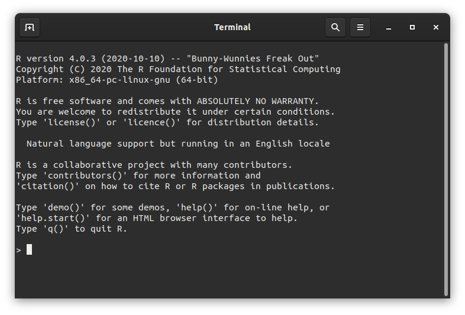
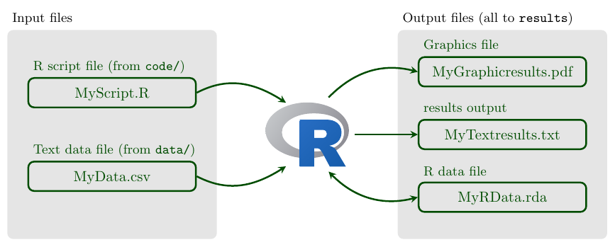

Biological Computing in R#
Learning goals
By the end of this chapter you should be able to:
Turn a simple biological question into an algorithm and check the result against an expected answer
Write and run a self-contained R script from the root of a project
Create, inspect and subset vectors, matrices, data frames and lists
Use vectorized operations to calculate with several values at once
Import a table, inspect its types and missing values, check simple assumptions and write a result
Write functions that take arguments and return useful values
Choose appropriately between vectorization, conditionals and loops
Diagnose common errors and add explicit checks for important assumptions
Install packages in a user library and load the packages a script needs
Make and save a clear base-R figure
Organize code, data and results so that an analysis can be rerun in a fresh R session
Prerequisites
The following experience is helpful but not essential:
basic command-line and file-management skills from UNIX and Linux; and
organizing scripts, data and results in a project directory.
No prior R, Python or statistics knowledge is assumed. Variables, functions, loops and the statistical context needed for the examples are introduced where they are used. You will need a working R installation for the exercises; setup and editor options are covered in Getting started with R.
Use your existing bootcamp project, or choose a learning project if you are studying R independently. See Organising your learning project and the R setup example under Your analysis workflow. You do not need a separate R coursework directory, or prior Python or Git study, to begin.
How the two R chapters fit together
This chapter is about learning to express and check a computation in R. Near the end, you will bring these skills together using a small table of biological observations. Data management and visualization in R carries on from there, asking what each row means, how a missing value differs from an observed zero, when to reshape a table, and how to make a figure that says what you intend. If you are taking both chapters in the same week, think of them as two parts of the same journey (to NiRvana!).
Introduction#
R is a free, open-source language and environment for statistical computing and graphics. It is particularly well suited to working with tabular data, fitting statistical models and producing reproducible visualizations.
R forms one part of the multilingual computing toolkit (recall Why Multilingual?). The Unix and Shell scripting chapters provide tools for managing files and coordinating programs; Python provides a general-purpose language for scientific programs and simulations; and R provides concise tools for data analysis, statistics and visualization. Code written in any of these languages can be tracked with Git and incorporated into reports written in LaTeX.
This is where we learn the R needed for the rest of MQB. If you have already worked with another programming language, you will recognize ideas such as variables, functions, conditionals and loops, although R expresses some of them differently. In the next R chapter, you will use these skills to decide how biological data should be organized, checked and plotted.
From an algorithm to R#
The Shell scripting chapter introduced an algorithm as a precise sequence of steps for solving a problem (and more specifically, that can be encoded in way that a computer can execute it).
The same algorithm can be implemented in different languages.
Consider the plant heights 8, 12, 10 and 15 cm. We want to count how many exceed 10 cm. The expected answer is 2. In R, the complete calculation can be written as:
heights <- c(8, 12, 10, 15)
sum(heights > 10)
The comparison heights > 10 checks every value and produces a logical vector. sum() then counts the TRUE values. This is an example of vectorization, an important feature of R that we will develop throughout the chapter.
The biological question, decision rule and expected result are independent of the language.
What changes is how the algorithm is expressed (the language and its syntax). The Python chapter uses the same example to make this explicit.
Why R?#
R is widely used in biological research because it combines:
data structures designed for scientific and tabular data;
extensive statistical and modelling capabilities;
high-quality graphics, including the
ggplot2ecosystem;vectorized operations for concise data processing;
a large collection of community-developed packages; and
scripts that preserve a reproducible record of an analysis.
Because an R analysis is represented as code, it can be checked, revised and rerun when data or assumptions change. The same script can also form one component of a larger workflow coordinated by the shell or Python.
R and its packages are available for all common operating systems through the Comprehensive R Archive Network (CRAN).
R in a multilingual workflow#
Task |
Typical tool |
|---|---|
Manage files and coordinate commands |
|
Write general scientific programs and simulations |
|
Analyse data, fit statistical models and create figures |
R |
Record and share changes |
|
Produce a scientific report |
These are typical strengths rather than rigid boundaries. For example, both R and Python can analyse data, create figures and call other programs. The aim is to choose tools that make each part of an analysis clear, testable and reproducible. Here we learn enough plotting to inspect and check a result; the Data management and visualization in R chapter develops data wrangling and the grammar of graphics in depth.
Getting started with R#
First confirm that R is installed by running R --version and Rscript --version in a terminal. If either command is unavailable, follow R Installation and User Libraries.
You can work in the R console or use an integrated development environment (IDE). This book supports both Visual Studio Code and RStudio; neither is required to understand the language. See To IDE or not to IDE for the general role of an IDE, R Installation and User Libraries for the runtime, and Using R in VS Code for the VS Code setup.
To start the command-line interface, type R in a terminal. You should see a prompt similar to the example below:


Fig. 17 The R console on Linux or macOS.#
R basics#
Let’s start with some R basics. Enter commands interactively at the R prompt (>); the up and down arrow keys move through your command history.
Useful R commands#
Command |
What it does |
|---|---|
|
list the objects in the workspace |
|
remove variable(s) |
|
remove all objects from the workspace |
|
get current working directory |
|
set the working directory to |
|
quit R |
|
show the documentation for |
|
search installed help pages for |
For reproducible scripts, start R in the project root and use relative paths, such as data/trees.csv. Avoid putting a path that only exists on your computer in setwd(). See Building your coursework directory structure.
Baby steps#
As in other programming languages, variables let you name values in an R session’s workspace. Creating an object uses some of the computer’s memory; for now, the important point is that the name lets you retrieve and work with that value.
★ Now, let’s try assigning a few variables in R and doing things to them:
a <- 4 # store 4 as variable a
a # display it
a * a # product
Store a variable:
a_squared <- a * a
Note
R commonly uses the <- assignment operator. The = symbol can also assign values in some contexts and is used to match named function arguments; this chapter uses <- for assignment so that the two roles remain visually distinct.
sqrt(a_squared) # square root
Build a vector with c (stands for “concatenate”):
v <- c(0, 1, 2, 3, 4)
v # Display the vector-valued variable you created
- 0
- 1
- 2
- 3
- 4
Note that any text after a # is ignored by R, as in many other languages — handy for commenting.
*In general, please comment your code and scripts, for everybody’s sake. You will be amazed by how difficult it is to read and understand what a certain R script does (or any other script, for that matter) without judicious comments — even scripts you yourself wrote not so long ago!
Tip
The Concatenate function: c()(concatenate) is one of the most commonly used R functions because it is the default method for combining multiple arguments into a vector. To learn more about it, type ?c at the R prompt and hit enter.
is.vector(v) # check if v's a vector
mean(v) # mean
Thus, a vector is like a single column or row in a spreadsheet (just like it is in Python). Multiple vectors can be combined to make a matrix (the full spreadsheet).
This is one of many ways R stores and processes data. More on R data types and objects below.
A single value (any kind) is a vector object of length 1 by default. That’s why in the R console you see [1] before any single-value output (e.g., type 8, and you will see [1] 8).
Some examples of operations on vectors:
var(v) # variance
median(v) # median
sum(v) # sum all elements
prod(v + 1) # multiply
length(v) # how many elements in the vector
Variable names and Tabbing#
In R, you can name variables in the following way to keep track of related variables:
wing.width.cm <- 1.2 #Using dot notation
wing.length.cm <- c(4.7, 5.2, 4.8)
This can be handy; type:
wing.
And then hit the tabkey to reveal all variables in that category. This is nice — variable names should be as obvious as possible. However, they should not be over-long either! Good style and readability is more important than just convenient variable names.
In fact, R allows dots to be used in variable names of all objects (not just objects that are variables). For example, functions names can have dots in them as well, as you will see below with the is.* family (e.g., is.infinite(), is.nan(), etc.).
Tip
Following a consistent style for different elements of your R code (syntax, conditionals, functions, etc) is important. The tidyverse style guide is recommended. You should keep going back to different sections of the style guide as you learn new topics. Here, for starters, have a look at naming conventions.
Operators#
The usual operators are available in R:
Operator |
|
|---|---|
|
Addition |
|
Subtraction |
|
Multiplication |
|
Division |
|
Power |
|
Modulo |
|
Integer division |
|
Equals |
|
Differs |
|
Greater |
|
Greater OR Equal |
|
Logical AND |
|
Logical OR |
|
Logical NOT |
When things go wrong#
Here are some common syntax errors that you might run into in R, especially when you are just beginning to learn this language:
Missing a closing bracket leads to continuation line, which looks something like this, with a
+at the end:
x <- (1 + (2 * 3)
+
Hit Ctrl-C (UNIX terminal or base R command line) or ESC (in RStudio) or keep typing!
Too many parentheses; for example,
2 + (2*3))Wrong or mismatched brackets (see next subsection)
Mixing double and single quotes will also give you an error
When things are taking too long and the R console seems frozen, try Ctrl + C (UNIX terminal or base R command line) or ESC (in RStudio) to force an exit from whatever is going on.
Types of parentheses#
R has specific uses for different types of Parentheses type that you need to get used to:
Parentheses type |
What it does |
|---|---|
|
call the function (or command) f, with the arguments 3 & 4. |
|
to enforce order over which statements or calculations are executed. Here |
|
group a set of expressions or commands into one compound expression. Value returned is value of last expression; used in building function, loops, and conditionals (more on these soon!). |
|
get the 4th element of the vector |
|
get the 3rd element of some list |
li = list(c(1,2,3))
class(li)
Variable types#
There are different kinds of data variable types in R, but you will basically need to know four for most of your work: integer, float (or “numeric”, including real numbers), string (or “character”, e.g.,
text), and Boolean (“logical”; Trueor FALSE).
Try this:
v <- TRUE
v
class(v)
The class() function tells you what type of variable any object in the workspace is.
v <- 3.2
class(v)
v <- 2L
class(v)
v <- "A string"
class(v)
b <- NA
class(b)
Also, the is.* family of functions allow you to check if a variable is a specific in R:
is.na(b)
b <- 0/0
b
is.nan(b)
b <- 5/0
b
is.nan(b)
Tip
Beware of the difference between NA (Not Available) and NaN (Not a Number). R will use NAto represent/identify missing values in data or outputs, while NaNrepresent nonsense values (e.g., 0/0) that cannot be represented as a number or some other data type.
See what R has to say about this: try ?is.nan, ?is.na, ?NA, ?NaNin the R commandline (one at a time!).
There are also Inf (Infinity, e.g., 1/0), and NULL (variable not set) value types. Look these up as well using ?.
is.infinite(b)
is.finite(b)
is.finite(0/0)
Type Conversions and Special Values#
The as.* commands all convert a variable from one type to another. Try out the following examples:
as.integer(3.1)
as.numeric(4)
as.roman(155)
[1] CLV
as.character(155) # same as converting to string
as.logical(5)
What just happened?! R maps all values other than 0 to logical TRUE, and 0 to FALSE. This can be useful, for example, when you want to convert data to presence or absence.
as.logical(0)
Also, keep an eye out for E notation in outputs of R functions for statistical analyses, and learn to interpret numbers formatted this way. R uses E notation in outputs of statistical tests to display very large or small numbers. If you are not used to different representations of long numbers, the E notation might be confusing.
Try this:
1E4
1e4
5e-2
1E4^2
1 / 3 / 1e8
Tip
Boolean values in R: Write TRUE and FALSE in full. R also recognizes T and F, but these are ordinary variable names and can be reassigned. The full forms are safer and easier to read. For example:
a <- TRUE
Type a in the R console to see the value stored in it.
R Data Structures#
R comes with different built-in structures (objects) for data storage and manipulation. Mastering these, and knowing which one to use when will help you write better, more efficient programs and also handle diverse datasets (numbers, counts, names, dates, etc):
Vector: |
An ordered collection of any of the R data types (see above). All the elements of a vector must be of the sane data type. Vectors are one-dimensional – like a single cell, column or row in a spreadsheet. |
Matrix: |
A 2 dimensional vector (has both rows and columns). Like vectors, can only store data of one type in any one instance of this data structure. |
Array: |
for storing data in more than two dimensions (e.g., a stack of 2-D matrices). Like vectors, can only store data of one type in any one instance of this data structure |
List: |
One-dimensional like vectors but can contain mixed data types |
Dataframe: |
Most versatile, can contain mixed data, and also column and row names |
Note
Data “structures” vs. “objects” in R: You will often see the terms “object” and “data structure” in this and other chapters. A data structure is a way of organising data, such as a vector or data frame. In R, values, functions and fitted models can all be objects. Each kind of object has its own rules for the operations that R can perform on it.
Vectors#
The Vector, which you have already seen above in the R warmup, is a fundamental data structure in R. Scalars (single data values) are treated as vector of length 1.
Basically, a vector is like a single cell, column or row in a spreadsheet, but with the constraint that all elements have tio be the same data type.
★ Now get back into R (if you somehow quit R using q() or something else), and try this:
a <- 5
is.vector(a)
v1 <- c(0.02, 0.5, 1)
v2 <- c("a", "bc", "def", "ghij")
v3 <- c(TRUE, TRUE, FALSE)
v1;v2;v3
- 0.02
- 0.5
- 1
- 'a'
- 'bc'
- 'def'
- 'ghij'
- TRUE
- TRUE
- FALSE
R vectors can only store data of a single type (e.g., all numeric or all character). If you try to combine different types, R will homogenize everything to the same data type. To see this, try the following:
v1 <- c(0.02, TRUE, 1)
v1
- 0.02
- 1
- 1
When R combines TRUE with numbers in one vector, it converts TRUE to 1 so that every element has the same data type.
v1 <- c(0.02, "Mary", 1)
v1
- '0.02'
- 'Mary'
- '1'
Everything gets converted to text!
Basically, the function c “coerces” arguments that are of mixed types (strings/text, real numbers, logical arguments, etc) to a common type.
You create empty vectors like this instead of using c():
v2 <- character(3) # an empty vector 'character' with 3 elements
v2
- ''
- ''
- ''
v3 <- numeric(3) # an empty numeric 'character' with 3 elements
v3
- 0
- 0
- 0
From an algorithm to R#
Return to the introduction’s question: how many of the heights 8, 12, 10 and 15 cm exceed 10 cm? We predicted 2 before writing code. Now store the heights in a vector and compare every element with the threshold:
heights_cm <- c(8, 12, 10, 15)
above_threshold <- heights_cm > 10
above_threshold
sum(above_threshold)
heights_cm > 10 applies the same comparison to each height and produces FALSE TRUE FALSE TRUE. When sum adds logical values, TRUE contributes 1 and FALSE contributes 0, so the result is 2, matching our prediction. The height of exactly 10 cm is not counted. What would change if the question asked for heights of at least 10 cm?
This is a vectorized implementation: R applies the comparison across the vector without an explicit loop in our code. The introduction’s counter procedure and this compare-and-sum procedure solve the same problem using different steps. The decision rule and expected result are unchanged; a loop is not the only way to implement the task.
All measurements here are present and in centimetres. If a measurement is missing (NA), the comparison and sum can also be NA. Deciding whether to exclude missing measurements is a scientific choice, not merely a way to obtain a number.
Matrices and Arrays#
An R “matrix” is a 2 dimensional vector (has both rows and columns) and a “array” can store data in more than two dimensions (e.g., a stack of 2-D matrices).
R has many functions to build and manipulate matrices and arrays.
Try this:
mat1 <- matrix(1:25, 5, 5)
mat1
| 1 | 6 | 11 | 16 | 21 |
| 2 | 7 | 12 | 17 | 22 |
| 3 | 8 | 13 | 18 | 23 |
| 4 | 9 | 14 | 19 | 24 |
| 5 | 10 | 15 | 20 | 25 |
Note that the output in your terminal or console will be more like:
print(mat1)
[,1] [,2] [,3] [,4] [,5]
[1,] 1 6 11 16 21
[2,] 2 7 12 17 22
[3,] 3 8 13 18 23
[4,] 4 9 14 19 24
[5,] 5 10 15 20 25
(even if you don’t use the print() command)
The output looks different above because the R code is running in a jupyter notebook.
Now try this:
mat1 <- matrix(1:25, 5, 5, byrow=TRUE)
mat1
| 1 | 2 | 3 | 4 | 5 |
| 6 | 7 | 8 | 9 | 10 |
| 11 | 12 | 13 | 14 | 15 |
| 16 | 17 | 18 | 19 | 20 |
| 21 | 22 | 23 | 24 | 25 |
That is, you can order the elements of a matrix by row instead of column (default).
dim(mat1) #get the size of the matrix
- 5
- 5
To make an array consisting of two 5\(\times\)5 matrices containing the integers 1-50:
arr1 <- array(1:50, c(5, 5, 2))
arr1[,,1]
| 1 | 6 | 11 | 16 | 21 |
| 2 | 7 | 12 | 17 | 22 |
| 3 | 8 | 13 | 18 | 23 |
| 4 | 9 | 14 | 19 | 24 |
| 5 | 10 | 15 | 20 | 25 |
print(arr1)
, , 1
[,1] [,2] [,3] [,4] [,5]
[1,] 1 6 11 16 21
[2,] 2 7 12 17 22
[3,] 3 8 13 18 23
[4,] 4 9 14 19 24
[5,] 5 10 15 20 25
, , 2
[,1] [,2] [,3] [,4] [,5]
[1,] 26 31 36 41 46
[2,] 27 32 37 42 47
[3,] 28 33 38 43 48
[4,] 29 34 39 44 49
[5,] 30 35 40 45 50
arr1[,,2]
| 26 | 31 | 36 | 41 | 46 |
| 27 | 32 | 37 | 42 | 47 |
| 28 | 33 | 38 | 43 | 48 |
| 29 | 34 | 39 | 44 | 49 |
| 30 | 35 | 40 | 45 | 50 |
Just like R vectors, R matrices and arrays have to be of a homogeneous type, and R will do the same sort of type homogenization you saw for R vectors above.
Try inserting a text value in mat1and see what happens:
mat1[1,1] <- "one"
mat1
| one | 2 | 3 | 4 | 5 |
| 6 | 7 | 8 | 9 | 10 |
| 11 | 12 | 13 | 14 | 15 |
| 16 | 17 | 18 | 19 | 20 |
| 21 | 22 | 23 | 24 | 25 |
mat1 went from being A matrix: 5 × 5 of type int to A matrix: 5 × 5 of type chr. That is, inserting a string in one location converted all the elements of the matrix to the chr (string) data type.
Thus R’s matrix and array are similar to Python’s numpy array and matrix data structures.
Lists#
A list is one-dimensional data structure that can be used to store a group of data objects of different sizes and types (e.g., one whole data frame and one vector can both be in a single list). It is simply an ordered collection of objects (that can be variables).
Note
The outputs of many statistical functions in R are lists (e.g. linear model fitting using lm()), to return all relevant information in one output object. So you need to know how to unpack and manipulate lists.
As a budding multilingual quantitative biologist, you should not be perturbed by the fact that a list is a very different data structure in Python vs R. It will take some practice — the good thing is that this sort of inconsistency is less common than in human languages where the same word far too often means different things in different languages!
Try this:
MyList <- list(1L, "p", FALSE, .001) # an integer, a character, a boolean, and a numeric walk into a bar...
MyList
- 1
- 'p'
- FALSE
- 0.001
A more complex (and meaningful) list:
MyList <- list(species=c("Quercus robur","Fraxinus excelsior"), age=c(123, 84))
MyList
- $species
-
- 'Quercus robur'
- 'Fraxinus excelsior'
- $age
-
- 123
- 84
You can access contents of a list item using number of the item instead of name using nested square brackets:
MyList[[1]]
- 'Quercus robur'
- 'Fraxinus excelsior'
MyList[[1]][1]
or using the name in either this way:
MyList$species
- 'Quercus robur'
- 'Fraxinus excelsior'
or this way:
MyList[["species"]]
- 'Quercus robur'
- 'Fraxinus excelsior'
And to access a specific element inside a list’s item
MyList$species[1]
A more complex list:
pop1<-list(species='Cancer magister',
latitude=48.3,longitude=-123.1,
startyr=1980,endyr=1985,
pop=c(303,402,101,607,802,35))
pop1
- $species
- 'Cancer magister'
- $latitude
- 48.3
- $longitude
- -123.1
- $startyr
- 1980
- $endyr
- 1985
- $pop
-
- 303
- 402
- 101
- 607
- 802
- 35
You can build lists of lists too:
pop1<-list(lat=19,long=57,
pop=c(100,101,99))
pop2<-list(lat=56,long=-120,
pop=c(1,4,7,7,2,1,2))
pop3<-list(lat=32,long=-10,
pop=c(12,11,2,1,14))
pops<-list(sp1=pop1,sp2=pop2,sp3=pop3)
pops
- $sp1
- $lat
- 19
- $long
- 57
- $pop
-
- 100
- 101
- 99
- $sp2
- $lat
- 56
- $long
- -120
- $pop
-
- 1
- 4
- 7
- 7
- 2
- 1
- 2
- $sp3
- $lat
- 32
- $long
- -10
- $pop
-
- 12
- 11
- 2
- 1
- 14
pops$sp1 # check out species 1
- $lat
- 19
- $long
- 57
- $pop
-
- 100
- 101
- 99
pops$sp1["pop"] # sp1's population sizes
- 100
- 101
- 99
pops[[2]]$lat #latitude of second species
pops[[3]]$pop[3]<-102 #change population of third species at third time step
pops
- $sp1
- $lat
- 19
- $long
- 57
- $pop
-
- 100
- 101
- 99
- $sp2
- $lat
- 56
- $long
- -120
- $pop
-
- 1
- 4
- 7
- 7
- 2
- 1
- 2
- $sp3
- $lat
- 32
- $long
- -10
- $pop
-
- 12
- 11
- 102
- 1
- 14
Data frames#
This is a very important data structure in R. Unlike matrices and vectors, R data frames can store data in which each column contains a different data type (e.g., numbers, strings, boolean) or even a combination of data types, just like a standard spreadsheet. Indeed, dataframes were built to emulate some of the convenient properties of spreadsheets. Many statistical and plotting functions and packages in R naturally use data frames.
Let’s build and manipulate a dataframe. First create three vectors:
Col1 <- 1:10
Col1
- 1
- 2
- 3
- 4
- 5
- 6
- 7
- 8
- 9
- 10
Col2 <- LETTERS[1:10]
Col2
- 'A'
- 'B'
- 'C'
- 'D'
- 'E'
- 'F'
- 'G'
- 'H'
- 'I'
- 'J'
Col3 <- runif(10) # 10 random numbers from a uniform distribution
Col3
- 0.524502438260242
- 0.0686463427264243
- 0.108535373117775
- 0.0225308381486684
- 0.777638833969831
- 0.705350611358881
- 0.159590638009831
- 0.359843957005069
- 0.210053576389328
- 0.612820434849709
Now combine them into a dataframe:
MyDF <- data.frame(Col1, Col2, Col3)
MyDF
| Col1 | Col2 | Col3 |
|---|---|---|
| <int> | <chr> | <dbl> |
| 1 | A | 0.52450244 |
| 2 | B | 0.06864634 |
| 3 | C | 0.10853537 |
| 4 | D | 0.02253084 |
| 5 | E | 0.77763883 |
| 6 | F | 0.70535061 |
| 7 | G | 0.15959064 |
| 8 | H | 0.35984396 |
| 9 | I | 0.21005358 |
| 10 | J | 0.61282043 |
Again, this output looks different from your terminal/console output because these commands are running in a Jupyter notebook.
Your output will look like this:
print(MyDF)
Col1 Col2 Col3
1 1 A 0.52450244
2 2 B 0.06864634
3 3 C 0.10853537
4 4 D 0.02253084
5 5 E 0.77763883
6 6 F 0.70535061
7 7 G 0.15959064
8 8 H 0.35984396
9 9 I 0.21005358
10 10 J 0.61282043
Note
Maybe you have guessed by now that R data frames are actually a kind of list. That is, a R data frame is in fact a list of equal-length vectors (a “rectangular” list).
You can easily assign names to the columns of dataframes:
names(MyDF) <- c("MyFirstColumn", "My Second Column", "My.Third.Column")
MyDF
| MyFirstColumn | My Second Column | My.Third.Column |
|---|---|---|
| <int> | <chr> | <dbl> |
| 1 | A | 0.52450244 |
| 2 | B | 0.06864634 |
| 3 | C | 0.10853537 |
| 4 | D | 0.02253084 |
| 5 | E | 0.77763883 |
| 6 | F | 0.70535061 |
| 7 | G | 0.15959064 |
| 8 | H | 0.35984396 |
| 9 | I | 0.21005358 |
| 10 | J | 0.61282043 |
And unlike matrices, you can access the contents of data frames by naming the columns directly using a $ sign:
MyDF$MyFirstColumn
- 1
- 2
- 3
- 4
- 5
- 6
- 7
- 8
- 9
- 10
But don’t use spaces in column names! Try this:
MyDF$My Second Column
Error in parse(text = input): <text>:1:9: unexpected symbol
1: MyDF$My Second
^
Traceback:
That gives an error, because R cannot handle spaces in column names easily.
So replace that column name using the colnames function:
colnames(MyDF)
- 'MyFirstColumn'
- 'My Second Column'
- 'My.Third.Column'
colnames(MyDF)[2] <- "MySecondColumn"
MyDF
| MyFirstColumn | MySecondColumn | My.Third.Column |
|---|---|---|
| <int> | <chr> | <dbl> |
| 1 | A | 0.52450244 |
| 2 | B | 0.06864634 |
| 3 | C | 0.10853537 |
| 4 | D | 0.02253084 |
| 5 | E | 0.77763883 |
| 6 | F | 0.70535061 |
| 7 | G | 0.15959064 |
| 8 | H | 0.35984396 |
| 9 | I | 0.21005358 |
| 10 | J | 0.61282043 |
But using dots in column names is OK (just as it is for variable names):
MyDF$My.Third.Column
- 0.524502438260242
- 0.0686463427264243
- 0.108535373117775
- 0.0225308381486684
- 0.777638833969831
- 0.705350611358881
- 0.159590638009831
- 0.359843957005069
- 0.210053576389328
- 0.612820434849709
You can also access elements by using numerical indexing:
MyDF[,1]
- 1
- 2
- 3
- 4
- 5
- 6
- 7
- 8
- 9
- 10
That is, you asked R to return values of MyDF in all rows (therefore, nothing before the comma), and the first column (1 after the comma).
MyDF[1,1]
MyDF[c("MyFirstColumn","My.Third.Column")] # show two specific columns only
| MyFirstColumn | My.Third.Column |
|---|---|
| <int> | <dbl> |
| 1 | 0.52450244 |
| 2 | 0.06864634 |
| 3 | 0.10853537 |
| 4 | 0.02253084 |
| 5 | 0.77763883 |
| 6 | 0.70535061 |
| 7 | 0.15959064 |
| 8 | 0.35984396 |
| 9 | 0.21005358 |
| 10 | 0.61282043 |
You can check whether a particular object is a dataframe data structure with:
class(MyDF)
You can check the structure of a dataframe with str():
str(MyDF)
'data.frame': 10 obs. of 3 variables:
$ MyFirstColumn : int 1 2 3 4 5 6 7 8 9 10
$ MySecondColumn : chr "A" "B" "C" "D" ...
$ My.Third.Column: num 0.5245 0.0686 0.1085 0.0225 0.7776 ...
You can print the column names and top few rows with head():
head(MyDF)
| MyFirstColumn | MySecondColumn | My.Third.Column | |
|---|---|---|---|
| <int> | <chr> | <dbl> | |
| 1 | 1 | A | 0.52450244 |
| 2 | 2 | B | 0.06864634 |
| 3 | 3 | C | 0.10853537 |
| 4 | 4 | D | 0.02253084 |
| 5 | 5 | E | 0.77763883 |
| 6 | 6 | F | 0.70535061 |
And the bottom few rows with tail():
tail(MyDF)
| MyFirstColumn | MySecondColumn | My.Third.Column | |
|---|---|---|---|
| <int> | <chr> | <dbl> | |
| 5 | 5 | E | 0.7776388 |
| 6 | 6 | F | 0.7053506 |
| 7 | 7 | G | 0.1595906 |
| 8 | 8 | H | 0.3598440 |
| 9 | 9 | I | 0.2100536 |
| 10 | 10 | J | 0.6128204 |
Note
The Factor data type: R has a special data type called “factor”. Different values in this data type are called “levels”. This data type is used to identify “grouping variables” such as columns in a dataframe that contain experimental treatments. This is convenient for statistical analyses using one of the many plotting and statistical commands or routines available in R, which have been written to interpret the factor data type as such and use it to automatically compare subgroups in the data. More on this later, when we delve into analyses (including visualization) in R.
Matrix vs Dataframe#
If dataframes are so nice, why use R matrices at all? The problem is that dataframes can be too slow when large numbers of mathematical calculations or operations (e.g., matrix - vector multiplications or other linear algebra operations) need to be performed. In such cases, you will need to convert a dataframe to a matrix. But for statistical analyses, plotting, and writing output of standard R analyses to a file, data frames are more convenient. Dataframes also allow you to refer to columns by name (using $), which is often convenient.
To see the difference in memory usage of matrices vs dataframes, try this:
MyMat = matrix(1:8, 4, 4)
MyMat
| 1 | 5 | 1 | 5 |
| 2 | 6 | 2 | 6 |
| 3 | 7 | 3 | 7 |
| 4 | 8 | 4 | 8 |
MyDF = as.data.frame(MyMat)
MyDF
| V1 | V2 | V3 | V4 |
|---|---|---|---|
| <int> | <int> | <int> | <int> |
| 1 | 5 | 1 | 5 |
| 2 | 6 | 2 | 6 |
| 3 | 7 | 3 | 7 |
| 4 | 8 | 4 | 8 |
object.size(MyMat) # returns size of an R object (variable) in bytes
280 bytes
object.size(MyDF)
1152 bytes
Quite a big difference!
Creating and manipulating data#
Creating sequences#
The : operator creates vectors of sequential integers:
years <- 1990:2009
years
- 1990
- 1991
- 1992
- 1993
- 1994
- 1995
- 1996
- 1997
- 1998
- 1999
- 2000
- 2001
- 2002
- 2003
- 2004
- 2005
- 2006
- 2007
- 2008
- 2009
years <- 2009:1990 # or in reverse order
years
- 2009
- 2008
- 2007
- 2006
- 2005
- 2004
- 2003
- 2002
- 2001
- 2000
- 1999
- 1998
- 1997
- 1996
- 1995
- 1994
- 1993
- 1992
- 1991
- 1990
For sequences of float numbers, you have to use seq():
seq(1, 10, 0.5)
- 1
- 1.5
- 2
- 2.5
- 3
- 3.5
- 4
- 4.5
- 5
- 5.5
- 6
- 6.5
- 7
- 7.5
- 8
- 8.5
- 9
- 9.5
- 10
Tip
Don’t forget, you can get help on a particular R command by prefixing it with ?. For example, try:
?seq
You can also use seq(from = 1, to = 10, by = 0.5) or seq(from = 1, by = 0.5, to = 10) with the same effect (try it). This explicit, “argument matching” approach is partly what makes R so popular and accessible to a wider range of users.
Accessing parts of data stuctures: Indices and Indexing#
Every element (entry) of a vector in R has an order (an “index” value): the first value, second, third, etc. To illustrate this, let’s create a simple vector:
MyVar <- c( 'a' , 'b' , 'c' , 'd' , 'e' )
Then, square brackets extract values based on their numerical order in the vector:
MyVar[1] # Show element in first position
MyVar[4] # Show element in fourth position
The values in square brackets are called “indices” — they give the index (position) of the required value. We can also select sets of values in different orders, or repeat values:
MyVar[c(3,2,1)] # reverse order
- 'c'
- 'b'
- 'a'
MyVar[c(1,1,5,5)] # repeat indices
- 'a'
- 'a'
- 'e'
- 'e'
You can also manipulate data structures/objects by indexing:
v <- c(0, 1, 2, 3, 4) # Create a vector named v
v[3] # access one element
v[1:3] # access sequential elements
- 0
- 1
- 2
v[-3] # remove elements
- 0
- 1
- 3
- 4
v[c(1, 4)] # access non-sequential indices
- 0
- 3
For matrices, you need to use both row and column indices:
mat1 <- matrix(1:25, 5, 5, byrow=TRUE) #create a matrix
mat1
| 1 | 2 | 3 | 4 | 5 |
| 6 | 7 | 8 | 9 | 10 |
| 11 | 12 | 13 | 14 | 15 |
| 16 | 17 | 18 | 19 | 20 |
| 21 | 22 | 23 | 24 | 25 |
mat1[1,2]
mat1[1,2:4]
- 2
- 3
- 4
mat1[1:2,2:4]
| 2 | 3 | 4 |
| 7 | 8 | 9 |
And to get all elements in a particular row or column, you need to leave the value blank:
mat1[1,] # First row, all columns
- 1
- 2
- 3
- 4
- 5
mat1[,1] # First column, all rows
- 1
- 6
- 11
- 16
- 21
Recycling#
When vectors are of different lengths, R will recycle the shorter one to make a vector of the same length:
a <- c(1,5) + 2
a
- 3
- 7
x <- c(1,2); y <- c(5,3,9,2)
x;y
- 1
- 2
- 5
- 3
- 9
- 2
x + y
- 6
- 5
- 10
- 4
Strange! R just recycled x (repeated 1,2 twice) so that the two vectors could be summed! here’s another example:
x + c(y,1)
Warning message in x + c(y, 1):
“longer object length is not a multiple of shorter object length”
- 6
- 5
- 10
- 4
- 2
Think about what happened here. R is clearly not comfortable doing this, so it warns you! recycling could be convenient at times, but is dangerous!
Basic vector-matrix operations#
You can perform the usual vector and matrix operations on R vectors.
v <- c(0, 1, 2, 3, 4)
v2 <- v*2 # multiply whole vector by 2
v2
- 0
- 2
- 4
- 6
- 8
v * v2 # element-wise product
- 0
- 2
- 8
- 18
- 32
t(v) # transpose the vector
| 0 | 1 | 2 | 3 | 4 |
v %*% t(v) # matrix/vector product
| 0 | 0 | 0 | 0 | 0 |
| 0 | 1 | 2 | 3 | 4 |
| 0 | 2 | 4 | 6 | 8 |
| 0 | 3 | 6 | 9 | 12 |
| 0 | 4 | 8 | 12 | 16 |
v3 <- 1:7 # assign using sequence
v3
- 1
- 2
- 3
- 4
- 5
- 6
- 7
v4 <- c(v2, v3) # concatenate vectors
v4
- 0
- 2
- 4
- 6
- 8
- 1
- 2
- 3
- 4
- 5
- 6
- 7
Strings and Pasting#
It is important to know how to handle strings in R for two main reasons:
To deal with text data, such as names of experimental treatments
To generate appropriate text labels and titles for figures
Let’s try creating and manipulating strings:
species.name <- "Quercus robur" #You can alo use single quotes
species.name
To combine to strings:
paste("Quercus", "robur")
paste("Quercus", "robur",sep = "") #Get rid of space
paste("Quercus", "robur",sep = ", ") #insert comma to separate
As you can see above, both double and single quotes work, but using double quotes is better because it will allow you to define strings that contain a single quotes, which is often necessary.
And as is the case with so many R functions, pasting works on vectors:
paste('Year is:', 1990:2000)
- 'Year is: 1990'
- 'Year is: 1991'
- 'Year is: 1992'
- 'Year is: 1993'
- 'Year is: 1994'
- 'Year is: 1995'
- 'Year is: 1996'
- 'Year is: 1997'
- 'Year is: 1998'
- 'Year is: 1999'
- 'Year is: 2000'
Note that this last example creates a vector of 11 strings as it is 1990:2000 inclusive.
Useful R functions#
There are a number of very useful functions available by default (in the “base packages”). Some particularly useful ones are listed below.
For manipulating strings#
Function |
|
|---|---|
|
Split the string |
|
Number of characters in string |
|
Set string |
|
Set string |
|
Join the two strings using ‘;’ |
Mathematical#
Function |
|
|---|---|
|
Natural logarithm of the number (or every number in the vector or matrix) |
|
Logarithm in base 10 of the number (or every number in the vector or matrix) |
|
Exponential of the number (or every number in the vector or matrix) |
|
Absolute value of the number (or every number in the vector or matrix) |
|
Largest integer smaller than the number (or every number in the vector or matrix) |
|
Smallest integer greater than the number (or every number in the vector or matrix) |
|
Square root of the number (or every number in the vector or matrix) |
|
Sine function of the number (or every number in a vector or matrix) |
|
Value of the constant \(\pi\) |
Statistical#
Function |
|
|---|---|
|
Compute mean of (a vector or matrix) |
|
Standard deviation of (a vector or matrix) |
|
Variance of (a vector or matrix) |
|
Median of (a vector or matrix) |
|
Compute the 0.05 quantile of (a vector or matrix) |
|
range of the data in (a vector or matrix) |
|
Minimum of (a vector or matrix) |
|
Maximum of (a vector or matrix) |
|
Sum all elements of (a vector or matrix) |
|
Summary statistics for (a vector or matrix) |
Sets#
Function |
|
|---|---|
|
Union of all elements of two vectors x & y |
|
Elements common to two vectors x & y |
|
Elements unique to two vectors x & y |
|
Check if two vectors x & y are the same set (have same unique elements) |
|
Check if an element x is in vector y (same as |
★ Try out the above commands in your R console by generating the appropriate data. For example,
strsplit("String; to; Split",';')# Split the string at ';'
-
- 'String'
- ' to'
- ' Split'
Generating random Numbers#
You will probably need to generate random numbers at some point as a quantitative biologist.
R has many routines for generating random samples from various probability distributions. There are a number of random number distributions that you can sample or generate random numbers from:
Function |
|
|---|---|
|
Draw 10 normal random numbers with mean=0 and standard deviation = 1 |
|
Density function |
|
Cumulative density function |
|
Twenty random numbers from uniform |
|
Twenty random numbers from Poisson (with mean \(\lambda\)) |
“Seeding” random number generators#
Computers can’t generate true mathematically random numbers. This may seem surprising, but basically a computer cannot be programmed to do things purely by chance; it can only follow given instructions blindly and is therefore completely predictable. Instead, computers have algorithms called “pseudo-random number generators” that generate practically random sequences of numbers. These are typically based on a iterative formula that generates a sequence of random numbers, starting with a first number called the “seed”. This sequence is completely “deterministic”, that is, starting with a particular seed yields exactly the same sequence of pseudo-random numbers every time you re-run the generator.
Try this:
set.seed(1234567)
rnorm(1)
Everybody in the class will get the same answer!
Now try and compare the results with your neighbor:
rnorm(10)
- 1.37381119149164
- 0.73067024376365
- -1.35080092669852
- -0.00851496085595985
- 0.320981862836429
- -1.77814840855737
- 0.909503835073888
- -0.919404336160487
- -0.157714830888067
- 1.10199738945752
And then the whole sequence of 11 numbers you generated:
set.seed(1234567)
rnorm(11)
- 0.156703769128359
- 1.37381119149164
- 0.73067024376365
- -1.35080092669852
- -0.00851496085595985
- 0.320981862836429
- -1.77814840855737
- 0.909503835073888
- -0.919404336160487
- -0.157714830888067
- 1.10199738945752
Thus, setting the seed allows you to reliably generate the identical sequence of “random” numbers. These numbers are not truly random, but have the properties of random numbers. Note also that pseudo-random number generators are periodic, which means that the sequence will eventually repeat itself. However, this period is so long that it can be ignored for most practical purposes. So effectively, rnorm has an enormous list that it cycles through. The random seed starts the process, i.e., indicates where in the list to start. This is usually taken from the clock when you start R.
But why bother with random number seeds? Setting a particular seed can be useful when debugging programs (coming up below). Bugs in code can be hard to find — harder still if you are generating random numbers, so repeat runs of your code may or may not all trigger the same behavior. You can set the seed once at the beginning of the code — ensuring repeatability, retaining (pseudo) randomness. Once debugged, if you want, you can remove the set seed line.
Your analysis workflow#
An R analysis usually reads data, runs code and creates several results. Keep these files in a clear project structure, whether you use R alone or alongside Bash and Python. Store scripts in code/, source data in data/ and generated output in results/. Start R at the project root so that all three directories have stable, predictable paths.
Thus, your typical R analysis workflow will be:


Fig. 18 R within your project. Scripts come from code/, inputs from data/, and outputs go to results/. The same layout works for an R-only analysis or a multilingual project.#
Some details on each kind of file:
R script files: These are plain text files containing all the R code needed for an analysis. These should be created with a text editor, typically part of some smart code editor like VS Code or RStudio, and saved with the extension
.R. You should never use Word to save or edit these files as R can only read code from plain text files.Text data files: These are files of data in plain text format containing one or more columns of data (numbers, strings, or both). Although there are several format options, we will typically be using
csvfiles, where the data entries are separated by commas. These are easy to create and export from Excel (if that’s what you use…).Results output files: These are plain text files containing your results, such as the summary of output of a regression or ANOVA analysis. Typically, you will output your results in a table format where the columns are separated by commas (CSV) or tabs (tab-delimited).
Graphics files: R can export graphics in a wide range of formats. This can be done automatically from R code and we will look at this later, but you can also select a graphics window (e.g., in RStudio) and click
File\(\triangleright\)Save as....RData files: You can save any data loaded or created in R, including outputs of statistical analyses and other things, into a single
RDatafile. These are not plain text and can only be read by R, but can hold all the data from an analysis in a single handy location. We will not use these much in this course.
Do you already have a project with this layout? If you are following the bootcamp, continue in the MQB_Bootcamp project you created for Shell and Python. Keep your R scripts alongside the other scripts in code/; do not create a separate R coursework project or rename your existing one.
If you are studying R independently, reuse an appropriate existing project or create a new one with a meaningful name. mqb_practice below is only an example name. See Organising your learning project for the shared directory convention.
For a new project only: start R in the parent directory where you want the project to live, such as Documents. Check this location with getwd() before creating anything. Do not run this block inside an existing coursework project: that would create an unnecessary nested project.
Use the internal directory names exactly as shown. On case-sensitive file systems, code and Code are different paths. Simple outer folder names without spaces are convenient for these examples.
The following uses R’s dir.create(); you can also make the same directories in your file manager or with Shell commands. If this example name already exists, stop and inspect that project rather than recreating it:
if (file.exists("mqb_practice")) {
stop("mqb_practice already exists; inspect it or choose an unused name.")
}
dir.create("mqb_practice")
dir.create("mqb_practice/code")
dir.create("mqb_practice/data")
dir.create("mqb_practice/results")
dir.create("mqb_practice/sandbox")
Creating directories does not move the R session into them. Open your chosen project root in your editor and start a new R session there; confirm with getwd() and dir(). If you already have a suitable project, skip the creation block and begin here.
Keep a root README.md describing your project. If you use Git, use a root .gitignore to exclude generated files and other files that should not be tracked. From the root, run Rscript code/script.R, read data/input.csv, and write results/output.csv, replacing these example filenames with your own. This works whatever the outer project folder is called. The later observations exercise explicitly uses a separate disposable project; keep that disposable practice separate from projects you want to retain.
The R workspace and working directory#
The workspace contains the objects you create during an R session. The working directory is the folder where R starts looking for a relative path. For example, if the working directory is your project root, data/trees.csv means the file trees.csv inside that project’s data folder. Use getwd() to show the working directory and dir() to list what it contains.
For a reproducible script, open a terminal at the project root and launch it explicitly, for example Rscript code/analysis.R. The script can then read data/input.csv and write results/output.csv. Do not edit the system-wide Rprofile.site or place a machine-specific setwd() in shared code. Editors may offer project-opening controls, but confirm their location with getwd() rather than assuming it.
R can save and restore an .RData workspace, but a clean script should create the objects it needs from source code and input data. Avoid relying on objects silently restored from a previous session. See the clean check in R Installation and User Libraries.
Importing and Exporting Data#
We are now ready to see how to import and export data in R, typically the first step of your analysis. The best option is to have your data in a comma separated value ( csv) text file or in a tab separated text file. Then, you can use the function read.csv(or read.table) to import your data. Now, let’s get some data into your Data directory.
★ Go to the MQB Git repository and navigate to the data directory.
★ Download and copy the file trees.csv into your own data directory.
Alternatively, of you may download the whole repository to your computer and then grab the file from the place where you downloaded it.
Now, import the data:
getwd() # This should be your coursework project root
MyData <- read.csv("data/trees.csv")
ls(pattern = "My*") # Check that MyData has appeared
- 'MyData'
- 'MyDF'
- 'MyList'
- 'MyMat'
- 'MyVar'
Your output may be somewhat different, depending on what what variables and other objects have been created in
your R workspace during the current R session. But the main thing is, you should be able to see a MyData in the list of objects printed.
Tip
You can list only objects with a particular name pattern by using the pattern option of ls(). It works by using regular expressions, which you were introduced through the grep command in the UNIX chapter. We will delve deeper into regular expressions in the python II Chapter.
Note that the resulting MyData object in your workspace is a R data frame:
class(MyData)
Relative paths#
The path data/trees.csv is a relative path: it tells R to look for trees.csv inside the data folder. Because we started at the project root, R looks in the right place. The same script can therefore work after the whole project is moved to another computer.
The notation .. means “the parent directory”. It is useful when you deliberately start inside a subdirectory: from code/, for example, ../data/trees.csv goes up to the project root and then into data/. We will keep that navigation idea in mind, but it is not our normal analysis setup; starting at the project root makes the input and output paths easier to read.
An absolute path gives the complete location on one computer, starting from a drive such as C:\ on Windows, /Users/ on macOS or /home/ on Linux. Do not put a personal absolute path or a setwd() call in shared scripts. Instead, state where the script should be launched and let its relative paths describe the files inside the project.
Tip
If you are using a computer from elsewhere in the EU, Excel may use a comma (e.g., \(\pi=3,1416\)) instead of a decimal point (\(\pi=3.1416\)). In this case, csvfiles may use a semi-colon to separate columns and you can use the alternative function read.csv2() to read them into the R workspace.
head(MyData) # Have a quick look at the data frame
| Species | Distance.m | Angle.degrees | |
|---|---|---|---|
| <chr> | <dbl> | <dbl> | |
| 1 | Populus tremula | 31.66583 | 41.28264 |
| 2 | Quercus robur | 45.98499 | 44.53592 |
| 3 | Ginkgo biloba | 31.24177 | 25.14626 |
| 4 | Fraxinus excelsior | 34.61667 | 23.33613 |
| 5 | Betula pendula | 45.46617 | 38.34913 |
| 6 | Betula pendula | 48.79550 | 33.59231 |
You can also have a more detailed look at the data you imported:
str(MyData) # Note the data types of the three columns
'data.frame': 120 obs. of 3 variables:
$ Species : chr "Populus tremula" "Quercus robur" "Ginkgo biloba" "Fraxinus excelsior" ...
$ Distance.m : num 31.7 46 31.2 34.6 45.5 ...
$ Angle.degrees: num 41.3 44.5 25.1 23.3 38.3 ...
MyData <- read.csv("data/trees.csv", header = FALSE) # Import ignoring headers
head(MyData)
| V1 | V2 | V3 | |
|---|---|---|---|
| <chr> | <chr> | <chr> | |
| 1 | Species | Distance.m | Angle.degrees |
| 2 | Populus tremula | 31.6658337740228 | 41.2826361937914 |
| 3 | Quercus robur | 45.984992608428 | 44.5359166583512 |
| 4 | Ginkgo biloba | 31.2417666241527 | 25.1462585572153 |
| 5 | Fraxinus excelsior | 34.6166691975668 | 23.336126555223 |
| 6 | Betula pendula | 45.4661654261872 | 38.3491299510933 |
Or you can load data using the more general read.table function:
MyData <- read.table("data/trees.csv", sep = ',', header = TRUE) # Another way
With read.table you need to specify whether there is a header row that needs to be imported as such.
head(MyData)
| Species | Distance.m | Angle.degrees | |
|---|---|---|---|
| <chr> | <dbl> | <dbl> | |
| 1 | Populus tremula | 31.66583 | 41.28264 |
| 2 | Quercus robur | 45.98499 | 44.53592 |
| 3 | Ginkgo biloba | 31.24177 | 25.14626 |
| 4 | Fraxinus excelsior | 34.61667 | 23.33613 |
| 5 | Betula pendula | 45.46617 | 38.34913 |
| 6 | Betula pendula | 48.79550 | 33.59231 |
MyData <- read.csv("data/trees.csv", skip = 5) # Skip first 5 lines
Writing to and saving files#
You can also save your data frames using write.table or write.csv:
write.csv(MyData, "results/MyData.csv")
dir("results/") # Check if it worked
- 'just_oaks_data.csv'
- 'LV_model.pdf'
- 'mammals.rdata'
- 'MyData.csv'
- 'MyFirst-ggplot2-Figure.pdf'
- 'MyResults.Rout'
- 'pound_hill_long.csv'
- 'Pred_Prey_Overlay.pdf'
- 'QMEENet.svg'
- 'test_r_errFile.rout'
- 'test_r.rout'
- 'TreeHeight.csv'
write.table(MyData[1, ], file = "results/MyData.csv", append = TRUE) # Append
Warning message in write.table(MyData[1, ], file = "results/MyData.csv", append = TRUE):
“appending column names to file”
You get a warning with here because R thinks it is strange that you are appending headers to a file that already has headers!
write.csv(MyData, "results/MyData.csv", row.names = TRUE) # Write row names
write.table(MyData, "results/MyData.csv", col.names = FALSE) # Omit column names
Writing R code#
Typing in commands interactively in the R console is good for starters, but you will want to switch to putting your sequence of commands into a script file, and then ask R to run those commands.
Open a new text file, call it
basic_io.R, and save it in yourcodedirectory. Keep your R session at the project root.Write the above input-output commands in it:
# A simple R script illustrating file input and output.
# Run from the coursework project root with:
# Rscript code/basic_io.R
MyData <- read.csv("data/trees.csv", header = TRUE) # Import with headers
write.csv(MyData, "results/MyData.csv") # Write it as a new file
write.table(MyData[1, ], file = "results/MyData.csv", append = TRUE) # Append to it
write.csv(MyData, "results/MyData.csv", row.names = TRUE) # Write row names
write.table(MyData, "results/MyData.csv", col.names = FALSE) # Omit column names
Now place the cursor on the first line of code in the script file and run it by pressing the appropriate keyboard shortcut (e.g., PC: ctrl+r, Mac: command+enter, Linux: ctrl+enter are the usual shortcuts for doing this). Check
getwd()first if your editor does not keep the R session at the project root.Check after every line that you are getting the expected result.
Running R code#
But even writing to a script file and running the code line-by-line or block-by-block is not your ultimate goal. What you would really like to do is to just run your full analysis and output all the results. There are two main approaches for running R script/code.
Using source#
You can run all the contents of a *.R script file from the R command line by using source(). If the script says data/trees.csv, R looks for that path from the session’s working directory.
★ With the R session at the project root, try sourcing basic_io.R:
source("code/basic_io.R")
Warning message in write.table(MyData[1, ], file = "results/MyData.csv", append = TRUE):
“appending column names to file”
That has run OK, warning and all.
If you get an error saying that
data/trees.csvcannot be found, inspectgetwd(). Return to the project root, then sourcecode/basic_io.Ragain.
The path in source("code/basic_io.R") tells R where to find the script; it does not move R into the code folder. R still looks for data/trees.csv from the project root. Keeping both interactive and command-line runs there means the same paths work in each case.
Do not put a source() command inside the script file you are sourcing, as it is then trying to run itself again and again and that’s just cruel!*
Tip
The command source() has a chdir argument whose default value is FALSE. If you change it to TRUE, R temporarily starts looking for files from the script’s folder. That would break data/trees.csv, so leave chdir as FALSE for this workflow.
Also, if you have sourced a script successfully, you will see no output on the R console/terminal unless there was an error or warning, or if you explicitly asked for something to be printed. So it can be useful to add a line at the end of the script saying something like print("Script complete!").
Using Rscript#
You can also run an R script from the UNIX/Linux terminal by calling Rscript. That is, while you have to be inside an R session to use the source command to run a script, you can run an R script directly from the UNIX/Linux terminal by calling Rscript.
This allows you to easily automate execution of your R scripts (e.g., by writing a bash script) and integrate R into a bigger computing pipeline/workflow by calling it through other tools or languages (e.g., see the Python Chapter).
Try using Rscript to run basic_io.R:
Exit from the R console using
ctrl+D, or open a new bash terminalChange to the coursework project root, which contains
code/,data/andresults/Run the script using
Rscript code/basic_io.R
Also, please have a look at man Rscript in a bash terminal.
Running R in batch mode#
In addition to Rscript, you can run an R script in batch mode from the terminal. From the project root, with results/ already created, run:
R CMD BATCH code/MyCode.R results/Myresults.rout
Replace MyCode.R with your script’s filename. The command saves the session’s text output in results/Myresults.rout; any data files or figures are written wherever your script specifies.
Control flow tools#
In R, you can write “if-then”, and “else” statements, and “for” and “while” loops like any programming language to give you finer control over your program’s “control flow”. Such statements are useful to include in functions and scripts because you may only want to do certain calculations or other tasks, under certain conditions (e.g., if the dataset is from a particular year, do something different).
Let’s look at some examples of these control flow tools in R.
★ Type each of the following blocks of code in a script file called control_flow.R and save it in your code directory. then run each block separately by sending or pasting into the R console.
if statements#
a <- TRUE
if (a) {
print ("a is TRUE")
} else {
print ("a is FALSE")
}
[1] "a is TRUE"
Because a already contains a logical value, if (a) tests it directly; there is no need to write if (a == TRUE). Compare this with Python conditionals.
You can also write an if statement on a single line:
z <- runif(1) ## Generate a uniformly distributed random number
if (z <= 0.5) {print ("Less than a half")}
But code readability is important, so avoid squeezing control flow blocks like this into a single line.
Tip
Please indent your code for readability, even if its not strictly necessary (unlike python). Indentation helps you see the flow of the logic, rather than flattened version, which is hard for you and anybody else to read. For example, the following code block is so much much readable than the one above:
z <- runif(1)
if (z <= 0.5) {
print ("Less than a half")
}
for loops#
loops are really useful to repeat a task over some range of input values.
The following code “loops” over a range of numbers, squaring each, and then printing the result:
for (i in 1:10) {
j <- i * i
print(paste(i, " squared is", j ))
}
[1] "1 squared is 1"
[1] "2 squared is 4"
[1] "3 squared is 9"
[1] "4 squared is 16"
[1] "5 squared is 25"
[1] "6 squared is 36"
[1] "7 squared is 49"
[1] "8 squared is 64"
[1] "9 squared is 81"
[1] "10 squared is 100"
What exactly is going on in the piece of code above? What are i and j? Let’s break it down:
Firstly The 1:10 part simply generates a sequence, as you learned previously:
1:10
- 1
- 2
- 3
- 4
- 5
- 6
- 7
- 8
- 9
- 10
This is the same as using seq(10) (try substituting this instead of 1:10 in the above block of code).
Then, j is a temporary variable that stores the value of the number (the other temporary variable, i) in that iteration of the loop.
Note
Using the : operator or the seq() function pre-generates the sequence and stores it in memory, so is less efficient that python’s range function, which generates numbers in a sequence on a “need-to” basis.
You can also loop over a vector of strings:
for(species in c('Heliodoxa rubinoides',
'Boissonneaua jardini',
'Sula nebouxii')) {
print(paste('The species is', species))
}
[1] "The species is Heliodoxa rubinoides"
[1] "The species is Boissonneaua jardini"
[1] "The species is Sula nebouxii"
These is a random assortment of birds!
And here’s a for loop using apre-existing vector:
v1 <- c("a","bc","def")
for (i in v1) {
print(i)
}
[1] "a"
[1] "bc"
[1] "def"
while loops#
If you want to perform an operation till some condition is met, use a while loop:
i <- 0
while (i < 10) {
i <- i+1
print(i^2)
}
[1] 1
[1] 4
[1] 9
[1] 16
[1] 25
[1] 36
[1] 49
[1] 64
[1] 81
[1] 100
★ Now test control_flow.R. That is, run the script file using source (and Rscript if on Linux).
If you get errors, read them carefully and fix them (this is going to be your mantra henceforth!).
Some more control flow tools#
Let’s look at some more control tools that are less commonly used, but can be useful in certain scenarios.
breaking out of loops#
Often it is useful (or necessary) to break out of a loop when some condition is met. Use break (like in pretty much any other programming language, like Python) in situations when you cannot set a target number of iterations and would like to stop the loop execultion once some condition is met (as you would with a while loop).
Try this (type into break.R and save in code):
i <- 0 #Initialize i
while (i < Inf) {
if (i == 10) {
break
} else { # Break out of the while loop!
cat("i equals " , i , " \n")
i <- i + 1 # Update i
}
}
i equals 0
i equals 1
i equals 2
i equals 3
i equals 4
i equals 5
i equals 6
i equals 7
i equals 8
i equals 9
Using next#
You can also skip to next iteration of a loop. Both next and break can be used within other loops ( while, for). Try this (type into next.R and save in code):
for (i in 1:10) {
if ((i %% 2) == 0) # check if the number is odd
next # pass to next iteration of loop
print(i)
}
[1] 1
[1] 3
[1] 5
[1] 7
[1] 9
This code checks if a number is odd using the “modulo” operation and prints it if it is.
Writing R Functions#
A function is a reusable block of code that takes an input, does something with it (or to it), and returns a result. Like other programming languages, R lets you write your own functions. The commands you have been using, such as ls(), mean() and c(), are functions. It is worth writing your own function whenever a task or set of analysis steps needs to be performed repeatedly.
The syntax for R functions is quite simple, with each function accepting “arguments” and “returning” a value.
Your first R function#
★ Type the following into a script file called boilerplate.Rand save it in your code directory:
# A boilerplate R script
my_function <- function(arg1, arg2) {
# Statements involving arg1, arg2:
print(paste("Argument", as.character(arg1), "is a", class(arg1))) # print arg1's type
print(paste("Argument", as.character(arg2), "is a", class(arg2))) # print arg2's type
return (c(arg1, arg2)) #this is optional, but very useful
}
my_function(1,2) #test the function
my_function("riki","Tiki") #A different test
Note the curly brackets — R uses these to identify where the function body starts and ends. Also note the indentation. It is not required, but it makes the code easier to read.
Now enter the R console and source the script:
source("code/boilerplate.R")
Argument 1 is a numeric
Argument 2 is a numeric
Argument riki is a character
Argument Tiki is a character
This will run the script, and also save your function my_function as an object into your workspace (try ls(), and you will see my_function appear in the list of objects):
ls(pattern = "my_fun*")
Again, you output may be a bit different as you have been different things in your R workspace/session than I have. What matters is that you see my_function in the list of objects above.
Now try:
class(my_function)
So, yes, my_function is a function object, just as it would be in Python.
Functions with conditionals#
A conditional lets a function choose a result based on its input. Here, the caller supplies the integer to check, and the function returns a message:
# Checks if an integer is even
is.even <- function(n) {
if (n %% 2 == 0) {
return(paste(n,'is even!'))
} else {
return(paste(n,'is odd!'))
}
}
is.even(6)
What would change if we wrote function(n = 2) instead? The 2 would become a default value: R would use it only when the caller omitted n. Let’s give this version a separate name so that we can compare the two without replacing our original function:
is.even.default <- function(n = 2) {
if (n %% 2 == 0) {
return(paste(n, 'is even!'))
} else {
return(paste(n, 'is odd!'))
}
}
is.even.default()
is.even.default(6)
is.even.default(n = 3)
The three calls return, respectively:
[1] "2 is even!"
[1] "6 is even!"
[1] "3 is odd!"
Only the first call uses the default. The other two supply a value, which takes precedence over 2. Both versions therefore give the same result when supplied with 6. But try omitting the input to our original function(n) version at the R prompt:
is.even()
Error in is.even() : argument "n" is missing, with no default
This error occurs when the function tries to use the missing n in its condition.
For this task, there is no good reason to assume that the number is 2. A default could hide a forgotten input and return a perfectly plausible answer to the wrong question! So we require the caller to supply n.
Defaults are more useful when an omitted argument has a clear, agreed meaning. Suppose we want to round a tree height for a report, normally to two decimal places:
report_height <- function(height_m, digits = 2) {
round(height_m, digits = digits)
}
report_height(12.345) # Returns 12.35
report_height(12.345, digits = 1) # Returns 12.3
Here, height_m is required: we cannot report a measurement nobody supplied. The number of decimal places is an optional reporting choice, with a default the caller can override. This function returns a rounded number, not formatted text with a fixed number of decimal places. Keep the original precision for calculations; round when reporting the result.
Choosing defaults: use a default when omitting an argument has a clear, useful meaning. Require an explicit input when guessing it could hide a mistake or change the scientific interpretation. Put required inputs before optional settings, document defaults and units, and use named arguments such as digits = 1 when overriding a setting. A default is not a substitute for checking whether an input is valid.
Be particularly careful with defaults for datasets, units, thresholds and missing-value handling. These can change the analysis, not just its presentation. For example, mean(x, na.rm = TRUE) removes missing values before calculating the mean; that should be a justified, explicit choice rather than a hidden convenience.
Predict, then try: after defining report_height, what will each call below do? Which use a default, which override it, and which should fail because a required input is missing? Try them one at a time at the R prompt; the errors are intentional.
report_height(8.678)
report_height(8.678, digits = 1)
report_height(digits = 1)
is.even()
Now return to conditionals. The next function also requires the caller to supply the number being checked:
# Checks if a number is a power of 2
is.power2 <- function(n) {
if (log2(n) %% 1==0) {
return(paste(n, 'is a power of 2!'))
} else {
return(paste(n,'is not a power of 2!'))
}
}
is.power2(4)
# Checks if a number is prime
is.prime <- function(n) {
if (n==0) {
return(paste(n,'is a zero!'))
} else if (n==1) {
return(paste(n,'is just a unit!'))
}
ints <- 2:(n-1)
if (all(n%%ints!=0)) {
return(paste(n,'is a prime!'))
} else {
return(paste(n,'is a composite!'))
}
}
is.prime(3)
★ run the three blocks of code in R one at a time and make sure you understand what each function is doing and how. Save all three blocks to a single script file called r_conditionals.R in your code directory, and make sure it runs using source and Rscript (in the Linux/Ubuntu terminal) .
An example utility function#
Now let’s write a script containing a more useful function:
★ In your text editor, type the following in a file called TreeHeight.R and save it in your code/ directory:
# This function calculates heights of trees given distance of each tree
# from its base and angle to its top, using the trigonometric formula
#
# height = distance * tan(radians)
#
# ARGUMENTS
# degrees: The angle of elevation of tree
# distance: The distance from base of tree (e.g., meters)
#
# OUTPUT
# The heights of the tree, same units as "distance"
TreeHeight <- function(degrees, distance) {
radians <- degrees * pi / 180
height <- distance * tan(radians)
return(height)
}
print(TreeHeight(37, 40))
Run
TreeHeight.R’s two blocks (theTreeHeightfunction and its example call) by pasting them sequentially into the R console. Try to understand what each line does. The function returns a number; the example call prints it.Now test the whole
TreeHeight.Rscript at one go usingsourceand/orRscript(in Linux/Ubuntu). The function also accepts vectors of angles and distances, which will be useful for a whole table.
Tree-height practicals#
Earlier in this chapter, you imported trees.csv into an R data frame and used project-root paths to read and write data. You also tried TreeHeight(37, 40), which turns one angle and one distance into an estimated height. Now let’s bring those steps together: read the tree measurements, calculate a height for every row, and save the result alongside the original columns.
This takes you from a calculation tried at the R prompt to a script you can run again on the whole table.
Calculate tree heights#
Use the supplied trees.csv table for this calculation. It has 120 rows and three columns: Species, Distance.m and Angle.degrees.
Download the tree tabletodata/trees.csvin a project withcode/,data/andresults/directories. Keep the supplied file unchanged. Start R at the project root, sodata/andresults/are relative to that root.Begin with the
TreeHeightfunction above incode/TreeHeight.R. Have the script read onlydata/trees.csv. Inspect the header and a few rows. Check for the three required columns, numeric finiteDistance.mandAngle.degrees,0 < Distance.m <= 100, and0 < Angle.degrees < 90. Give a clear error if an assumption fails; you are checking the supplied input, not building a data-cleaning pipeline.Use the function to calculate
height_min metres for every row. The distance is horizontal distance from observer to tree, and the angle is measured from horizontal in degrees:height_m = Distance.m * tan(Angle.degrees * pi / 180). Keep each height in the same row as its source species and measurements; species names are not unique record identifiers.Create
results/if needed and writeresults/TreeHts.csv, replacing it on rerun. Preserve the three input columns in their original order and appendheight_mas the fourth column. The CSV header should be:Species,Distance.m,Angle.degrees,height_m
From the project root, run
Rscript code/TreeHeight.R, inspect the output header and check that the output has 120 data rows in the same order as the input. Check one height independently with a calculator or a short R expression; for a separate toy measurement, 8 m at 45 degrees gives8 * tan(45 * pi / 180) = 8m. Rerun the script and confirm it replaces the result rather than adding rows. You should also be able to usesource("code/TreeHeight.R")from an R session started at the project root.
In your root README.md, record the run command, the input and output paths, and the record and calculation you checked. Keep code/TreeHeight.R and the unchanged downloaded CSV. The generated results/TreeHts.csv can be recreated; if you use Git, track the script and input, and ignore the generated result.
Generalize the tree-height script#
Generalize the height calculation to another CSV with the same three columns as trees.csv: Species, Distance.m and Angle.degrees. The script does not need to accept other header conventions.
Write
code/get_TreeHeight.Rto accept exactly one readable CSV path throughcommandArgs(trailingOnly = TRUE). TryRscript code/get_TreeHeight.R data/trees.csvfrom the project root. Report a useful error for no argument, extra arguments, a missing file or a wrong header. Reuse the input checks,TreeHeightcalculation and four-column output contract from the first practical. Callingsource()from an ordinary R session does not supply this command-line argument, so run the finished script withRscript.Write
results/<input-basename-without-.csv>_treeheights.csv, replacing it on rerun. For the supplied file this isresults/trees_treeheights.csv. Use the basename so a relative input directory does not become part of the result path. Two input paths ending in the same basename would target the same result filename; document this limit. Never overwrite the input file.To make sure the height calculation is correct, apply the “Paranoid programming” debugging approach introduced in the Python chapter, using R’s
browser(). Temporarily placebrowser()immediately before the line that calculates the heights. Because the browser needs an interactive R console, start R from the project root withR --vanilla --args data/trees.csv, then runsource("code/get_TreeHeight.R")at the R prompt. This works because the input argument was supplied when R started. In browser mode, inspect the distance and angle in one row and calculate its expected height manually. Usento execute the height-calculation line, then compare the calculated height for that row with your prediction. Usecto continue, and removebrowser()when you have finished debugging. Finally, writecode/run_get_TreeHeight.shto runRscript code/get_TreeHeight.R data/trees.csvfrom the project root and stop if the command fails.
Implement the tree-height script in Python#
If you have worked through the Python chapter, write code/get_TreeHeight.py to accept the same single CSV-path argument and use the same three input columns, height calculation and four output columns. Write its result to results/<input-basename-without-.csv>_treeheights_python.csv, replacing it on rerun, so it does not overwrite the R result. Add python3 code/get_TreeHeight.py data/trees.csv to code/run_get_TreeHeight.sh; the shell script should stop if either implementation fails.
Vectorization#
R is relatively slow at cycling through a data structure such as a dataframe or matrix (e.g., by using a for loop) because it is a high-level, interpreted computer language.
That is, when you execute a command in R, it needs to “read” and interpret the necessary code from scratch every single time the command is called. On the other hand, compiled languages like C know exactly what the flow of the program is because the code is pre-interpreted and ready to go before execution (i.e., the code is “compiled”).
For example, when you assign a new variable in R:
a <- 1.0
class(a)
R automatically figures out that 1.0 is an floating point number, and finds a place in the system memory for it with a registered as a “pointer” to it.
In contrast, in C, for example, you would have to do so manually by giving a an address and space in memory:
float a
a = 1
Vectorization is an approach where you directly apply compiled, optimized code to run an operation on a vector, matrix, or an higher-dimensional data structure (like an R array), instead of performing the operation element-wise (each row or column element one at a time) on the data structure.
Apart from computational efficiency vectorization makes writing code more concise, easy to read, and less error prone.
Let’s try an example that illustrates this point.
★ Type (save in Code) as Vectorize1.R the following script, and run it (it sums all elements of a matrix):
M <- matrix(runif(1000000),1000,1000)
SumAllElements <- function(M) {
Dimensions <- dim(M)
Tot <- 0
for (i in 1:Dimensions[1]) {
for (j in 1:Dimensions[2]) {
Tot <- Tot + M[i,j]
}
}
return (Tot)
}
print("Using loops, the time taken is:")
print(system.time(SumAllElements(M)))
print("Using the in-built vectorized function, the time taken is:")
print(system.time(sum(M)))
[1] "Using loops, the time taken is:"
user system elapsed
0.033 0.000 0.032
[1] "Using the in-built vectorized function, the time taken is:"
user system elapsed
0.001 0.000 0.001
Note the system.time R function: it calculates how much time your code takes. This time will vary with every run, and every computer that this code is run on (so your times will be a bit different than what I got).
Both SumAllElements() and sum() approaches are correct, and will give you the right answer. However, the inbuilt function sum() is about 100 times faster than the other, because it uses vectorization, avoiding the amount of looping that SumAllElements() uses.
In effect, of course, the computer still has to run loops. However, this running of the loops is encapsulated in a pre-complied program that R calls. These programs are written in more primitive (and therefore, faster) languages like Fortran and C. For example sum is actually written in C if you look under the hood.
In R, a for loop is often the clearest way to express a task. Start with readable, correct code, then optimise it only if its running time becomes a problem. You should therefore still become familiar with loops and looping, as in the sections above.
Pre-allocation#
When using loops, repeatedly resizing an object can be slow because R must repeatedly allocate memory. For example, a loop that extends a vector on every iteration makes R re-allocate memory each time. Try this:
NoPreallocFun <- function(x) {
a <- vector() # empty vector
for (i in 1:x) {
a <- c(a, i) # concatenate
print(a)
print(object.size(a))
}
}
system.time(NoPreallocFun(10))
[1] 1
56 bytes
[1] 1 2
56 bytes
[1] 1 2 3
64 bytes
[1] 1 2 3 4
64 bytes
[1] 1 2 3 4 5
80 bytes
[1] 1 2 3 4 5 6
80 bytes
[1] 1 2 3 4 5 6 7
80 bytes
[1] 1 2 3 4 5 6 7 8
80 bytes
[1] 1 2 3 4 5 6 7 8 9
96 bytes
[1] 1 2 3 4 5 6 7 8 9 10
96 bytes
user system elapsed
0.002 0.000 0.003
Here, in each repetition of the for loop, you can see that R has to re-size the vector and re-allocate (more) memory. It has to find the vector in memory, create a new vector that will fit more data, copy the old data over, insert the new data, and erase the old vector. This can get very slow as vectors get big.
On the other hand, if you “pre-allocate” a vector that fits all the values, R doesn’t have to re-allocate memory each iteration. Here’s how you’d do that for the above case:
PreallocFun <- function(x) {
a <- rep(NA, x) # pre-allocated vector
for (i in 1:x) {
a[i] <- i # assign
print(a)
print(object.size(a))
}
}
system.time(PreallocFun(10))
[1] 1 NA NA NA NA NA NA NA NA NA
96 bytes
[1] 1 2 NA NA NA NA NA NA NA NA
96 bytes
[1] 1 2 3 NA NA NA NA NA NA NA
96 bytes
[1] 1 2 3 4 NA NA NA NA NA NA
96 bytes
[1] 1 2 3 4 5 NA NA NA NA NA
96 bytes
[1] 1 2 3 4 5 6 NA NA NA NA
96 bytes
[1] 1 2 3 4 5 6 7 NA NA NA
96 bytes
[1] 1 2 3 4 5 6 7 8 NA NA
96 bytes
[1] 1 2 3 4 5 6 7 8 9 NA
96 bytes
[1] 1 2 3 4 5 6 7 8 9 10
96 bytes
user system elapsed
0.003 0.000 0.003
★ Write the above two blocks of code into a script called preallocate.R. You can’t really see the difference in timing here using system.time() because the vector is really small (just 10 elements), and the print() commands take up most of the time. To really see the difference in efficiency between the two functions, increase the iterations in your script from 10 to 1000, and suppress the print commands. Make this modification to your script. The modified script should print just the outputs of the two system.time() calls.
Fortunately, R has several functions that can operate on entire vectors and matrices without requiring looping (Vectorization). That is, vectorizing a computer program means you write it such that as many operations as possible are applied to whole data structure (vectors, matrices, dataframes, lists, etc) at one go, instead of its individual elements.
You will learn about some important R functions that allow vectorization in the following sections.
The *apply family of functions#
There are a family of functions called *apply in R that vectorize your code for you. These functions are described in the help files (e.g. ?apply).
For example, apply can be used when you want to apply a function to the rows or columns of a matrix (and higher-dimensional analogues – remember arrays!). This is not generally advisable for data frames as it will first need to coerce the data frame to a matrix first.
Let us try using applying the same function to rows/colums of a matrix using apply.
★ Type the following in a script file called apply1.R, save it to your Code directory, and run it:
## Build a random matrix
M <- matrix(rnorm(100), 10, 10)
## Take the mean of each row
rowMeans <- apply(M, 1, mean)
print (rowMeans)
[1] 0.36031151 0.04436538 0.22147423 0.20493801 0.16210725 0.04860134
[7] 0.41767343 -0.30198204 0.17624371 -0.12782576
## Now the variance
rowVars <- apply(M, 1, var)
print (rowVars)
[1] 0.8054302 0.5757168 0.3312622 0.4285847 0.9819718 0.9878042 0.6637336
[8] 0.8063847 0.4404945 1.3378551
## By column
ColMeans <- apply(M, 2, mean)
print (ColMeans)
[1] 0.225188540 -0.005593872 0.070236505 0.540658047 0.207704657
[6] -0.039456952 -0.308016915 -0.052139549 -0.017257915 0.584584511
That was using apply on some of R’s inbuilt functions. You can use apply to define your own functions. Let’s try it.
★ Type the following in a script file called apply2.R, save it to your Code directory, and run it:
SomeOperation <- function(v) { # (What does this function do?)
if (sum(v) > 0) { #note that sum(v) is a single (scalar) value
return (v * 100)
} else {
return (v)
}
}
M <- matrix(rnorm(100), 10, 10)
print (apply(M, 1, SomeOperation))
[,1] [,2] [,3] [,4] [,5] [,6]
[1,] -106.44722 2.3371370 1.0559140 132.82229 -1.6203334 -0.05900780
[2,] -157.38528 0.3797613 -1.2492399 24.26802 -2.2088775 0.90341806
[3,] 92.95907 -0.6291500 -0.9929116 29.93611 -0.3486302 -0.04996913
[4,] -111.08703 -1.4445990 0.3708286 141.99939 -0.6054340 -0.13279619
[5,] -125.89911 -0.4336938 -0.7685165 13.44170 -0.3323428 -0.12348365
[6,] 208.06965 0.6501489 -0.9919553 -74.20527 0.4434329 -0.18276033
[7,] 87.63698 -1.0227154 -3.1277661 -82.89960 0.4122197 -0.03684696
[8,] 51.75016 -0.1946142 0.6565232 53.47613 -1.1940299 0.42181959
[9,] 189.57050 -1.0438154 -1.1548153 120.39767 -0.1090974 -1.05598363
[10,] -23.49047 -2.1845175 -1.1056128 -39.83537 -0.6582071 -1.38676997
[,7] [,8] [,9] [,10]
[1,] -0.40267504 143.30394 -96.153857 48.088545
[2,] 0.30144152 -152.23231 135.607088 -72.898308
[3,] 0.11424690 -47.33326 12.495097 115.674739
[4,] -0.81054999 -69.50276 105.596186 -4.562763
[5,] 0.05203639 69.80701 25.350763 -31.714310
[6,] 0.14324126 183.99747 -70.573723 25.479703
[7,] -0.46020333 -114.11636 -189.228103 106.570816
[8,] 0.13776675 -10.50949 9.018402 -12.671495
[9,] -0.80801253 54.87079 140.080446 -56.858713
[10,] -0.21652267 169.58570 23.127953 21.557046
Thus, the function SomeOperation takes as input v. Then if the sum of v is greater than zero, it multiplies that value by 100. So if v has positive and negative numbers, and the sum comes out to be positive, only then does it multiply all the values in v by 100 and return them.
There are many other methods: lapply, sapply, eapply, etc. Each is suited to particular tasks or data structures. For example, lapply and sapply work with R lists. Have a look at this Stack Overflow thread for some guidelines.
A vectorization example#
Let’s try an example of vectorization involving lapply and sapply. Both of these apply a function to each element of a list, but the former returns a list, while the latter returns a vector.
We will also see how sampling random numbers works in the process of trying out this example.
★ Type the following blocks of code into a single script called sample.R and save in code.
First some functions:
######### Functions ##########
## A function to take a sample of size n from a population "popn" and return its mean
myexperiment <- function(popn,n) {
pop_sample <- sample(popn, n, replace = FALSE)
return(mean(pop_sample))
}
## Calculate means using a FOR loop on a vector without preallocation:
loopy_sample1 <- function(popn, n, num) {
result1 <- vector() #Initialize empty vector of size 1
for(i in 1:num) {
result1 <- c(result1, myexperiment(popn, n))
}
return(result1)
}
## To run "num" iterations of the experiment using a FOR loop on a vector with preallocation:
loopy_sample2 <- function(popn, n, num) {
result2 <- vector(,num) #Preallocate expected size
for(i in 1:num) {
result2[i] <- myexperiment(popn, n)
}
return(result2)
}
## To run "num" iterations of the experiment using a FOR loop on a list with preallocation:
loopy_sample3 <- function(popn, n, num) {
result3 <- vector("list", num) #Preallocate expected size
for(i in 1:num) {
result3[[i]] <- myexperiment(popn, n)
}
return(result3)
}
## To run "num" iterations of the experiment using vectorization with lapply:
lapply_sample <- function(popn, n, num) {
result4 <- lapply(1:num, function(i) myexperiment(popn, n))
return(result4)
}
## To run "num" iterations of the experiment using vectorization with sapply:
sapply_sample <- function(popn, n, num) {
result5 <- sapply(1:num, function(i) myexperiment(popn, n))
return(result5)
}
Think carefully about what each of these functions does.
Now let’s generate a population. To get the same result every time, let’s set seed (you might want to review this section).
set.seed(12345)
popn <- rnorm(10000) # Generate the population
hist(popn)

And run and time the different functions:
n <- 100 # sample size for each experiment
num <- 10000 # Number of times to rerun the experiment
print("Using loops without preallocation on a vector took:" )
print(system.time(loopy_sample1(popn, n, num)))
print("Using loops with preallocation on a vector took:" )
print(system.time(loopy_sample2(popn, n, num)))
print("Using loops with preallocation on a list took:" )
print(system.time(loopy_sample3(popn, n, num)))
print("Using the vectorized sapply function (on a list) took:" )
print(system.time(sapply_sample(popn, n, num)))
print("Using the vectorized lapply function (on a list) took:" )
print(system.time(lapply_sample(popn, n, num)))
[1] "Using loops without preallocation on a vector took:"
user system elapsed
0.242 0.036 0.279
[1] "Using loops with preallocation on a vector took:"
user system elapsed
0.143 0.127 0.269
[1] "Using loops with preallocation on a list took:"
user system elapsed
0.131 0.117 0.248
[1] "Using the vectorized sapply function (on a list) took:"
user system elapsed
0.134 0.130 0.264
[1] "Using the vectorized lapply function (on a list) took:"
user system elapsed
0.141 0.114 0.255
Note that these times will be different on your computer because they depend on the computer’s hardware and software (especially, the operating system), as well as what other processes are running.
★ run sample.R using source and/or Rscript and make sure it works.
rerun the script a few times, first by fixing the n and num parameters, and then also by varying them. Compare the times you get from these repeated runs of the script and think about which approach is the most efficient and why. Clearly, the loopy, without a pre-allocation approach is usually (but not always) going to be bad, while the others are pretty comparable.
The tapply function#
Let’s look at tapply, which is particularly useful because it allows you to apply a function to subsets of a vector in a dataframe, with the subsets defined by some other vector in the same dataframe, usually a factor (this could be useful for pound hill data analysis that’s coming up, for example).
This makes it a bit of a different member of the *apply family. Try this:
x <- 1:20 # a vector
x
- 1
- 2
- 3
- 4
- 5
- 6
- 7
- 8
- 9
- 10
- 11
- 12
- 13
- 14
- 15
- 16
- 17
- 18
- 19
- 20
Now create a factor type variable (of the same length) defining groups:
y <- factor(rep(letters[1:5], each = 4))
y
- a
- a
- a
- a
- b
- b
- b
- b
- c
- c
- c
- c
- d
- d
- d
- d
- e
- e
- e
- e
Levels:
- 'a'
- 'b'
- 'c'
- 'd'
- 'e'
Now add up the values in x within each subgroup defined by y:
tapply(x, y, sum)
- a
- 10
- b
- 26
- c
- 42
- d
- 58
- e
- 74
Using by#
You can also do something similar to tapply with the by function, i.e., apply a function to a dataframe using some factor to define the subsets. Try this:
First import some data:
attach(iris)
iris
| Sepal.Length | Sepal.Width | Petal.Length | Petal.Width | Species |
|---|---|---|---|---|
| <dbl> | <dbl> | <dbl> | <dbl> | <fct> |
| 5.1 | 3.5 | 1.4 | 0.2 | setosa |
| 4.9 | 3.0 | 1.4 | 0.2 | setosa |
| 4.7 | 3.2 | 1.3 | 0.2 | setosa |
| 4.6 | 3.1 | 1.5 | 0.2 | setosa |
| 5.0 | 3.6 | 1.4 | 0.2 | setosa |
| 5.4 | 3.9 | 1.7 | 0.4 | setosa |
| 4.6 | 3.4 | 1.4 | 0.3 | setosa |
| 5.0 | 3.4 | 1.5 | 0.2 | setosa |
| 4.4 | 2.9 | 1.4 | 0.2 | setosa |
| 4.9 | 3.1 | 1.5 | 0.1 | setosa |
| 5.4 | 3.7 | 1.5 | 0.2 | setosa |
| 4.8 | 3.4 | 1.6 | 0.2 | setosa |
| 4.8 | 3.0 | 1.4 | 0.1 | setosa |
| 4.3 | 3.0 | 1.1 | 0.1 | setosa |
| 5.8 | 4.0 | 1.2 | 0.2 | setosa |
| 5.7 | 4.4 | 1.5 | 0.4 | setosa |
| 5.4 | 3.9 | 1.3 | 0.4 | setosa |
| 5.1 | 3.5 | 1.4 | 0.3 | setosa |
| 5.7 | 3.8 | 1.7 | 0.3 | setosa |
| 5.1 | 3.8 | 1.5 | 0.3 | setosa |
| 5.4 | 3.4 | 1.7 | 0.2 | setosa |
| 5.1 | 3.7 | 1.5 | 0.4 | setosa |
| 4.6 | 3.6 | 1.0 | 0.2 | setosa |
| 5.1 | 3.3 | 1.7 | 0.5 | setosa |
| 4.8 | 3.4 | 1.9 | 0.2 | setosa |
| 5.0 | 3.0 | 1.6 | 0.2 | setosa |
| 5.0 | 3.4 | 1.6 | 0.4 | setosa |
| 5.2 | 3.5 | 1.5 | 0.2 | setosa |
| 5.2 | 3.4 | 1.4 | 0.2 | setosa |
| 4.7 | 3.2 | 1.6 | 0.2 | setosa |
| ⋮ | ⋮ | ⋮ | ⋮ | ⋮ |
| 6.9 | 3.2 | 5.7 | 2.3 | virginica |
| 5.6 | 2.8 | 4.9 | 2.0 | virginica |
| 7.7 | 2.8 | 6.7 | 2.0 | virginica |
| 6.3 | 2.7 | 4.9 | 1.8 | virginica |
| 6.7 | 3.3 | 5.7 | 2.1 | virginica |
| 7.2 | 3.2 | 6.0 | 1.8 | virginica |
| 6.2 | 2.8 | 4.8 | 1.8 | virginica |
| 6.1 | 3.0 | 4.9 | 1.8 | virginica |
| 6.4 | 2.8 | 5.6 | 2.1 | virginica |
| 7.2 | 3.0 | 5.8 | 1.6 | virginica |
| 7.4 | 2.8 | 6.1 | 1.9 | virginica |
| 7.9 | 3.8 | 6.4 | 2.0 | virginica |
| 6.4 | 2.8 | 5.6 | 2.2 | virginica |
| 6.3 | 2.8 | 5.1 | 1.5 | virginica |
| 6.1 | 2.6 | 5.6 | 1.4 | virginica |
| 7.7 | 3.0 | 6.1 | 2.3 | virginica |
| 6.3 | 3.4 | 5.6 | 2.4 | virginica |
| 6.4 | 3.1 | 5.5 | 1.8 | virginica |
| 6.0 | 3.0 | 4.8 | 1.8 | virginica |
| 6.9 | 3.1 | 5.4 | 2.1 | virginica |
| 6.7 | 3.1 | 5.6 | 2.4 | virginica |
| 6.9 | 3.1 | 5.1 | 2.3 | virginica |
| 5.8 | 2.7 | 5.1 | 1.9 | virginica |
| 6.8 | 3.2 | 5.9 | 2.3 | virginica |
| 6.7 | 3.3 | 5.7 | 2.5 | virginica |
| 6.7 | 3.0 | 5.2 | 2.3 | virginica |
| 6.3 | 2.5 | 5.0 | 1.9 | virginica |
| 6.5 | 3.0 | 5.2 | 2.0 | virginica |
| 6.2 | 3.4 | 5.4 | 2.3 | virginica |
| 5.9 | 3.0 | 5.1 | 1.8 | virginica |
Now run the colMeans function (it is better for dataframes than just mean) on multiple columns:
by(iris[,1:2], iris$Species, colMeans)
iris$Species: setosa
Sepal.Length Sepal.Width
5.006 3.428
------------------------------------------------------------
iris$Species: versicolor
Sepal.Length Sepal.Width
5.936 2.770
------------------------------------------------------------
iris$Species: virginica
Sepal.Length Sepal.Width
6.588 2.974
by(iris[,1:2], iris$Petal.Width, colMeans)
iris$Petal.Width: 0.1
Sepal.Length Sepal.Width
4.82 3.36
------------------------------------------------------------
iris$Petal.Width: 0.2
Sepal.Length Sepal.Width
4.972414 3.379310
------------------------------------------------------------
iris$Petal.Width: 0.3
Sepal.Length Sepal.Width
4.971429 3.328571
------------------------------------------------------------
iris$Petal.Width: 0.4
Sepal.Length Sepal.Width
5.300000 3.785714
------------------------------------------------------------
iris$Petal.Width: 0.5
Sepal.Length Sepal.Width
5.1 3.3
------------------------------------------------------------
iris$Petal.Width: 0.6
Sepal.Length Sepal.Width
5.0 3.5
------------------------------------------------------------
iris$Petal.Width: 1
Sepal.Length Sepal.Width
5.414286 2.371429
------------------------------------------------------------
iris$Petal.Width: 1.1
Sepal.Length Sepal.Width
5.400000 2.466667
------------------------------------------------------------
iris$Petal.Width: 1.2
Sepal.Length Sepal.Width
5.78 2.74
------------------------------------------------------------
iris$Petal.Width: 1.3
Sepal.Length Sepal.Width
5.884615 2.746154
------------------------------------------------------------
iris$Petal.Width: 1.4
Sepal.Length Sepal.Width
6.3250 2.9125
------------------------------------------------------------
iris$Petal.Width: 1.5
Sepal.Length Sepal.Width
6.183333 2.816667
------------------------------------------------------------
iris$Petal.Width: 1.6
Sepal.Length Sepal.Width
6.375 3.100
------------------------------------------------------------
iris$Petal.Width: 1.7
Sepal.Length Sepal.Width
5.80 2.75
------------------------------------------------------------
iris$Petal.Width: 1.8
Sepal.Length Sepal.Width
6.400000 2.941667
------------------------------------------------------------
iris$Petal.Width: 1.9
Sepal.Length Sepal.Width
6.34 2.68
------------------------------------------------------------
iris$Petal.Width: 2
Sepal.Length Sepal.Width
6.650000 3.016667
------------------------------------------------------------
iris$Petal.Width: 2.1
Sepal.Length Sepal.Width
6.916667 3.033333
------------------------------------------------------------
iris$Petal.Width: 2.2
Sepal.Length Sepal.Width
6.866667 3.200000
------------------------------------------------------------
iris$Petal.Width: 2.3
Sepal.Length Sepal.Width
6.9125 3.0875
------------------------------------------------------------
iris$Petal.Width: 2.4
Sepal.Length Sepal.Width
6.266667 3.100000
------------------------------------------------------------
iris$Petal.Width: 2.5
Sepal.Length Sepal.Width
6.733333 3.400000
Using replicate#
The replicate function is useful to avoid a loop for function that typically involves random number generation (more on this below). For example:
replicate(10, runif(5))
| 0.05779543 | 0.79875145 | 0.48499984 | 0.86907132 | 0.1283642 | 0.0009810759 | 0.6536405 | 0.8683811 | 0.8454915 | 0.8783501 |
| 0.45615105 | 0.57098740 | 0.23039036 | 0.30154024 | 0.2747319 | 0.2428520240 | 0.9098087 | 0.6079378 | 0.6468676 | 0.7984627 |
| 0.56282049 | 0.04613426 | 0.62504519 | 0.04747557 | 0.7813629 | 0.8418969549 | 0.4024599 | 0.6946761 | 0.6771371 | 0.2471511 |
| 0.47753585 | 0.69846828 | 0.46303515 | 0.25758230 | 0.2651486 | 0.1114152884 | 0.1513297 | 0.3396491 | 0.8450003 | 0.3601890 |
| 0.63433648 | 0.40640785 | 0.07475354 | 0.04436429 | 0.0915491 | 0.2450728263 | 0.4717760 | 0.4990844 | 0.7130802 | 0.9336190 |
That is, you just generated 10 sets (columns) of 5 uniformly-distributed random numbers (a 10 \(\times\) 5 matrix).
Note
The actual numbers you get will be different from the ones you see here unless you set the random number seed as we learned above.
Using plyr and ddply#
The plyr package combines the functionality of the *apply family into a few handy functions. See the official package overview.
In particular, ddply is very useful, because for each subset of a data frame, it applies a function and then combines results into another data frame. In other words, “ddply” means: take a data frame, split it up, do something to it, and return a data frame. See the official ddply reference and the split-apply-combine paper for examples. ddply can be slower than other vectorized methods, as it trades some speed for compactness of use. Overall, functions in plyr can be slow if you are working with very large datasets that involve a lot of subsetting (analyses by many groups or grouping variables).
The base *apply functions remain useful and worth knowing even if you do get into plyr or better still, dplyr, which we will see in the Data chapter.
Practical: a vectorization challenge#
The ricker model is a classic discrete population model which was introduced in 1954 by ricker to model recruitment of stock in fisheries. It gives the expected number (or density) \(N_{t+1}\) of individuals in generation \(t + 1\) as a function of the number of individuals in the previous generation \(t\):
Here \(r\) is intrinsic growth rate and \(k\) as the carrying capacity of the environment. Try this script (call it ricker.R and save it to code) that runs it:
ricker <- function(N0=1, r=1, K=10, generations=50)
{
# runs a simulation of the ricker model
# returns a vector of length generations
N <- rep(NA, generations) # Creates a vector of NA
N[1] <- N0
for (t in 2:generations)
{
N[t] <- N[t-1] * exp(r*(1.0-(N[t-1]/K)))
}
return (N)
}
plot(ricker(generations=10), type="l")

Now open and run the script vectorize2.R (available on the MQB repository). This is the stochastic ricker model (compare with the above script to see where the stochasticity (random error) enters). Now modify the script to complete the exercise given.
Your goal is to come up with a solution better than mine!
Errors and Debugging#
As we learned in the Python Chapter, fixing errors and debugging is an integral part of programming! And just like Python, a variety of debugging tools and functions are available in R.
Tracing the error trail#
When R encounters a runtime error, it will typically display the call “stack” (sequence) after the error occurs, helping you trace where the error happened.
Let’s try an example (type and run it using your code editor):
# Define nested functions
outer_function <- function(a) {
middle_function(a)
}
middle_function <- function(b) {
inner_function(b)
}
inner_function <- function(c) {
# Intentional error: division by zero
result <- c / d
return(result)
}
# Call the outer function
outer_function(1)
Error in inner_function(b): object 'd' not found
Traceback:
1. middle_function(a)
2. inner_function(b)
3. .handleSimpleError(function (cnd)
. {
. watcher$capture_plot_and_output()
. cnd <- sanitize_call(cnd)
. watcher$push(cnd)
. switch(on_error, continue = invokeRestart("eval_continue"),
. stop = invokeRestart("eval_stop"), error = NULL)
. }, "object 'd' not found", base::quote(inner_function(b)))
The Traceback shows the sequence of function calls that led to the error, helping you pinpoint its origin.
Tip
If you do not get a traceback automatically, you an use the traceback() function (run it after yout get the error) to find where the errors(s) are when a program crashes.
Debugging using breakpoints#
Once you have found an error, you need to debug it. Assuming you have an idea about where (or the general area) in your code the error is, a simple way to debug is to use the browser() function.
Just like the ipdb.set_tarce() command in Python, browser() allows you to insert a breakpoint in your script and then step through your code. Place it within your script at the point you want to examine local variables (e.g. inside a for loop).
Let’s look at an example usage of browser().
★ Type the following in a script file called browse.R and save in code:
Exponential <- function(N0 = 1, r = 1, generations = 10) {
# runs a simulation of exponential growth
# returns a vector of length generations
N <- rep(NA, generations) # Creates a vector of NA
N[1] <- N0
for (t in 2:generations) {
N[t] <- N[t-1] * exp(r)
browser()
}
return (N)
}
plot(Exponential(), type="l", main="Exponential growth")
Now run browse.R from the R console (using source()).
The script will be run till the first iteration of the for loop and the R console will enter the browser mode, which looks like this:
Browse[1]>
Now, you can examine the variables present at that point. Also, at the browser console, you can enter expressions as normal, or use a few particularly useful debug commands (similar to the Python debugger):
n: execute the next line.c: exit browser and continue executionQ: exit browser and abort, return to top-level.
You can also inspect variables in the current state of the function run using ls() (try it).
Using debug()#
The debug() function flags a function for debugging; R will enter the browser mode every time the function is called.
Let’s define a function with a bug (type and run it):
buggy_function <- function(n) {
result <- n + unknown_variable
return(result)
}
Now enable debugging by running in the R console:
debug(buggy_function)
Now call the function:
buggy_function(10)
R will enter the browser mode at the beginning of buggy_function(). You can step through and inspect variables as you did in the browser() example above.
Tip
If you want to debug the function only once, use: debugonce(buggy_function)
Tip
IDEs like RStudio offer built-in debugging features such as breakpoints and step-through execution.
Unit testing#
We will not cover unit testing here, which we did in Python Chapter). Unit testing in R is equally recommended, especially if you are going to develop complex code and packages.
Tip
A very convenient tool for R unit testing is testthat.
In addition, you can use other “defensive programming” methods in R to keep an eye on errors that might arise in special circumstances in an complex program. A good option for this is to convert warnings to errors using the stopifnot(). This is a bit like try (which we will cover below, and we also covered in Python Chapter).
“Catching” errors#
Often, you don’t know if a simulation or a R function will work on a particular data or variable, or a value of a variable (can happen in many statistical functions).
Indeed, as most of you must have already experienced by now, there can be frustrating, puzzling bugs in programs that lead to mysterious errors. Often, the error and warning messages you get are un-understandable, especially in R!
Rather than letting R stop the whole analysis, you may want to catch the error and continue. You can do this with try().
Let’s try try!
First, let’s write a function:
doit <- function(x) {
temp_x <- sample(x, replace = TRUE)
if(length(unique(temp_x)) > 30) {#only take mean if sample was sufficient
print(paste("Mean of this sample was:", as.character(mean(temp_x))))
}
else {
stop("Couldn't calculate mean: too few unique values!")
}
}
This function runs a simulation that involves sampling from a synthetic population with replacement and takes its mean, but only if at least 30 unique samples are obtained. Note that we have used another keyword here: stop(). Pay close attention to sample(), and stop() in the above script (check out what they are by using R help or searching online).
Now, generate your population:
set.seed(1345) # again, to get the same result for illustration
popn <- rnorm(50)
hist(popn)

Now try running it using lapply as you did above, repeating the sampling exercise 15 times:
lapply(1:15, function(i) doit(popn))
[1] "Mean of this sample was: -0.11620822588674"
[1] "Mean of this sample was: -0.0468516755995931"
[1] "Mean of this sample was: -0.0890228211466614"
[1] "Mean of this sample was: -0.124229742255296"
Error in doit(popn): Couldn't calculate mean: too few unique values!
Traceback:
1. FUN(X[[i]], ...)
2. doit(popn)
3. stop("Couldn't calculate mean: too few unique values!")
4. .handleSimpleError(function (cnd)
. {
. watcher$capture_plot_and_output()
. cnd <- sanitize_call(cnd)
. watcher$push(cnd)
. switch(on_error, continue = invokeRestart("eval_continue"),
. stop = invokeRestart("eval_stop"), error = NULL)
. }, "Couldn't calculate mean: too few unique values!", base::quote(doit(popn)))
Your result will be different than this (you would get between 0 - 15 samples; we got 4 here). But in most cases, the script will fail because of the stop command (on line 7 of the above function) at some iteration, returning less than the requested 15 mean values, followed by an error stating that the mean could not be calculated because too few unique values were sampled.
Now try doing the same using try:
result <- lapply(1:15, function(i) try(doit(popn), FALSE))
[1] "Mean of this sample was: 0.0314144452816157"
[1] "Mean of this sample was: -0.233476945796405"
[1] "Mean of this sample was: -0.196681538928001"
[1] "Mean of this sample was: 0.0146969612111605"
[1] "Mean of this sample was: -0.234913159471725"
[1] "Mean of this sample was: -0.0497464588165691"
Error in doit(popn) : Couldn't calculate mean: too few unique values!
[1] "Mean of this sample was: 0.14834078393269"
[1] "Mean of this sample was: -0.271626543849156"
[1] "Mean of this sample was: -0.0661949014450445"
[1] "Mean of this sample was: -0.162429229014161"
[1] "Mean of this sample was: -0.0962033633604762"
[1] "Mean of this sample was: -0.025525566612254"
[1] "Mean of this sample was: -0.196872015952289"
[1] "Mean of this sample was: 0.1902095255599"
In this run, you again asked for the means of 15 samples, and again you (most likely) got less than that (see the above example output). With the try command, the errors are caught and lapply() continues through each iteration. The silent argument of try() controls whether those errors are printed in the terminal. By default, silent = FALSE, so the messages are shown; use silent = TRUE to suppress them. Remember to check the help for built-in R functions such as try.
The errors are also stored in the object result:
class(result)
This is a list that stores the result of each of the 15 runs, including the ones that ran into an error. Have a look at it:
result
[[1]]
[1] "Mean of this sample was: 0.0314144452816157"
[[2]]
[1] "Mean of this sample was: -0.233476945796405"
[[3]]
[1] "Mean of this sample was: -0.196681538928001"
[[4]]
[1] "Mean of this sample was: 0.0146969612111605"
[[5]]
[1] "Mean of this sample was: -0.234913159471725"
[[6]]
[1] "Mean of this sample was: -0.0497464588165691"
[[7]]
[1] "Error in doit(popn) : Couldn't calculate mean: too few unique values!\n"
attr(,"class")
[1] "try-error"
attr(,"condition")
<simpleError in doit(popn): Couldn't calculate mean: too few unique values!>
[[8]]
[1] "Mean of this sample was: 0.14834078393269"
[[9]]
[1] "Mean of this sample was: -0.271626543849156"
[[10]]
[1] "Mean of this sample was: -0.0661949014450445"
[[11]]
[1] "Mean of this sample was: -0.162429229014161"
[[12]]
[1] "Mean of this sample was: -0.0962033633604762"
[[13]]
[1] "Mean of this sample was: -0.025525566612254"
[[14]]
[1] "Mean of this sample was: -0.196872015952289"
[[15]]
[1] "Mean of this sample was: 0.1902095255599"
That’s a lot output! But basically it tells you which runs ran into and error and why (no surprises here, of course!). You can also store the results “manually” by using a loop to do the same:
result <- vector("list", 15) #Preallocate/Initialize
for(i in 1:15) {
result[[i]] <- try(doit(popn), FALSE)
}
[1] "Mean of this sample was: -0.123990166669901"
Error in doit(popn) : Couldn't calculate mean: too few unique values!
[1] "Mean of this sample was: 0.0818124335353191"
[1] "Mean of this sample was: -0.139655286435176"
[1] "Mean of this sample was: -0.0215429865826124"
Error in doit(popn) : Couldn't calculate mean: too few unique values!
[1] "Mean of this sample was: 0.00539838134322893"
Error in doit(popn) : Couldn't calculate mean: too few unique values!
[1] "Mean of this sample was: 0.146907839413106"
[1] "Mean of this sample was: -0.152002314653857"
[1] "Mean of this sample was: 0.0161321300360042"
[1] "Mean of this sample was: -0.241857872516043"
[1] "Mean of this sample was: -0.16077541901813"
[1] "Mean of this sample was: -0.0450988128783513"
[1] "Mean of this sample was: -0.162230652541811"
Now have a look at the new result; it will have similar content as the one you got from using lapply.
Tip
Also check out tryCatch(), which provides more control over error and warning handling, as an alternative to try()
★ Type the above blocks of code illustrating try into a script file called try.R and save in code. The script, when sourced, should run without errors (that is, don’t run the sampling function without try!).
Packages#
The big strength of R is that users can easily build and share packages through cran.r-project.org.
There are R packages for practically all statistical and mathematical analysis you might conceive, so check them out before reinventing the wheel. Visit cran.r-project.org and go to packages to see a list and a brief description.
Install a package from the R console with install.packages(). Use your personal library as described in R Installation and User Libraries.
For example:
install.packages(c("tidyverse"))
You can also install multiple packages by concatenating their names: install.packages(c("pack1","pack2","pack3"))
(three packages in this hypothetical example)
Install packages from an ordinary R session into your personal library; do not launch R with sudo. If R asks to create a personal library, answer yes. See R Installation and User Libraries for checks and troubleshooting.
You can also use the RStudio package interface, but it installs into the same R libraries: inspect .libPaths() when a package appears in one session but not another. Operating-system package managers are for system-managed packages and libraries, not a substitute for checking which R installation and user library you are using.
★ Go ahead and install tidyverse if you don’t have it yet. We will be using it soon!
Building your own#
You can combine your code, data sets and documentation to make a bona fide R package. You may wish to do this for particularly large projects that you think will be useful for others. read the Writing R Extensions manual and see package.skeleton to get started.
The R tool set EcoDataTools and the package cheddar were written by Silwood Grad Students!
The observations practice#
This exercise uses the same small table and the same rules as the Python exercise, so you can think about the choices being made rather than simply translate one language into another. Work in a disposable project containing code, data, and results directories. Download the ordinary observations, boundary observations, and invalid observations into the data directory. Save your work as code/observations_practice.R, then run it from the project root with Rscript code/observations_practice.R.
Guided: read, inspect, and decide what counts as valid#
Read every column as character data first so validation happens before conversion:
observations <- read.csv(
"data/bootcamp_observations.csv",
colClasses = "character", na.strings = "", check.names = FALSE
)
str(observations)
print(observations)
For this exercise, the columns must be site,date,count, in that order. Every row needs a site and date. An empty count means that the observation is missing; zero means that somebody looked and counted none; every other count must be a non-negative integer. The ordinary dataset deliberately contains one repeated row. Before writing any code, explain why a missing count and an observed zero must not be treated alike.
Guided: validate before calculating#
Write a read_observations(path) function. Check the exact column names, reject empty sites or dates, and use grepl("^(0|[1-9][0-9]*)$", value) on each non-missing count before converting it with as.integer(). Stop with an informative error when a rule fails. Run the function on bootcamp_observations_invalid.csv and confirm that it stops because -1 is not a non-negative integer.
Independent: deduplicate and summarise#
Write summarise_observations(data) without looking at the Python solution. Remove exact duplicate rows once. For each site, report total_known (the sum of non-missing counts) and missing_count separately. If every count for a site is missing, total_known must be NA, not zero. Your results should be: A (2, 1), B (0, 0), C (NA, 2), and D (0, 0), where each pair is (total_known, missing_count). Add stopifnot() checks for these four examples.
Create one reproducible base-R figure of known totals and save it under results/; make the all-missing case visible in the caption or annotation rather than silently plotting it as zero. Rerun the complete script in a fresh terminal.
Critique and compare#
Compare your R result with the Integrated practical: summarising observations. Which decisions should stay the same whichever language you use, and which arise from the way R or Python works? Use the following examples to begin your critique:
Missing is not zero. Replacing every
NAwith0might seem to simplify the calculation, but it changes what the data mean. There is a subtler trap too:sum(c(NA_integer_, NA_integer_), na.rm = TRUE)returns0. Why is that misleading for site C, where neither count was observed? Explain when removing missing values is useful and what you must check before interpreting the sum. Which of your tests would catch an all-missing site being reported as zero?A repeated row is not another observation. After count validation and conversion, site A’s counts in the ordinary file are
c(2L, NA_integer_, 2L). Summing them withna.rm = TRUEbefore removing the exact duplicate gives4, rather than the expected2. Why would checking only the number of sites fail to detect this mistake? Identify a check that would detect it, and explain why removing duplicate count values alone is not the same as removing duplicate rows: two genuine observations can have the same count.An error should help somebody locate the problem. Compare
Invalid inputwithbootcamp_observations_invalid.csv: CSV line 2, column 'count': found '-1'; expected an empty field or a non-negative integer.Here, CSV line 1 is the header. Which details would help you find the offending entry and understand the rule it breaks? Draft a similarly useful message for themanyentry on CSV line 3. Report the problem rather than silently replacing the value or guessing a correction.
Climate-data practicals#
Practical: is Florida getting warmer?#
This Practical assumes you have at least a basic understanding of correlation coefficients and p-values.
Your goal is to write an R script that will help answer the question: Is Florida getting warmer?
Save the script as code/Florida.R. Download the Key West annual-mean temperature data into data/ in a project with code/, data/ and results/ directories. Run it from the project root with Rscript code/Florida.R.
To answer the question, you need to calculate the correlation coefficients between temperature and time. However, you can’t use the standard p-value calculated for a correlation coefficient, because measurements of climatic variables in successive time-points in a time series (successive seconds, minutes, hours, months, years, etc.) are not independent. Therefore you will use a permutation analysis instead, by generating a distribution of random correlation coefficients and compare your observed coefficient with this random distribution.
Some guidelines:
Load and examine the annual temperature dataset from Key West in Florida, USA for the 20th century:
rm(list=ls())
load("data/key_west_annual_mean_temperature.RData")
ls()
class(ats)
head(ats)
| Year | Temp | |
|---|---|---|
| <int> | <dbl> | |
| 1 | 1901 | 23.75000 |
| 2 | 1902 | 24.66667 |
| 3 | 1903 | 24.71667 |
| 4 | 1904 | 24.51667 |
| 5 | 1905 | 24.88333 |
| 6 | 1906 | 24.63333 |
plot(ats)

Then,
Compute the appropriate correlation coefficient between years and Temperature and store it (look at the help file for
cor()repeat this calculation a sufficient number of times, each time randomly reshuffling the temperatures (i.e., randomly re-assigning temperatures to years), and recalculating the correlation coefficient (and storing it)
Tip
You can use the sample function that we learned about above to do the shuffling. read the help file for this function and experiment with it.
Calculate what fraction of the random correlation coefficients were greater than the observed one (this is your approximate, asymptotic p-value).
Interpret and present the results: Present your results and their interpretation in a pdf document written in \(\LaTeX\) (save the document’s source code alongside the PDF) (Keep the writeup, including any figures, to one A4 page).
Group practical: autocorrelation in Florida weather#
This Practical assumes you have at least a basic understanding of correlation coefficients and p-values.
Download the Key West annual-mean temperature data into data/ in a project with code/, data/ and results/ directories. Write code/TAutoCorr.R, run it from the project root and save the results in results/. Your goal is to answer the question: Are temperatures of one year significantly correlated with the next year (successive years), across years in a given location?
To answer this question, you need to calculate the correlation between (n-1) pairs of years, where \(n\) is the total number of years. However, here again, you can’t use the standard p-value calculated for a correlation coefficient, because measurements of climatic variables in successive time-points in a time series (successive seconds, minutes, hours, months, years, etc.) are not independent.
The general guidelines are:
Compute the appropriate correlation coefficient between successive years and store it (look at the help file for
cor()repeat this calculation a sufficient number of times by – randomly permuting the time series, and then recalculating the correlation coefficient for each randomly permuted sequence of annual temperatures and storing it.
Then calculate what fraction of the correlation coefficients from the previous step were greater than that from step 1 (this is your approximate p-value).
Interpret and present the results Present your results and their interpretation in a pdf document written in \(\LaTeX\) (save the document’s source code alongside the PDF).
Readings & Resources#
Check the readings under the R directory in the MQB repository. Also, search online for “R tutorial”, and plenty will pop up. Choose ones that seem the most intuitive to you. * remember, all R packages come with pdf guides/documentation!
R as a Programming language#
There are excellent websites besides cran. In particular, check out statmethods.net and the R Wiki.
https://blog.sellorm.com/2017/12/18/learn-to-write-command-line-utilities-in-r/
https://www.r-bloggers.com/2019/11/r-scripts-as-command-line-tools/
Mathematical modelling and Stats in R#
The Use R! series (all yellow books) by Springer are really good. In particular, consider: “A Beginner’s Guide to R”, “R by Example”, “Numerical Ecology With R”, “ggplot2” (coming up in the Visualization Chapter, “A Primer of Ecology with R”, “Nonlinear Regression with R”, and “Analysis of Phylogenetics and Evolution with R”.
For more focus on dynamical models: Soetaert & Herman. 2009 “A practical guide to ecological modelling: using R as a simulation platform”.
Debugging#
testthat: Unit testing for R by Hadley Wickham (also developer of thetidyversepackage, includingggplot).An introduction to the Interactive Debugging Tools in R by roger D Peng.
If you are using RStudio, see this.
Sweave and knitr, and beyond#
Tools built around R allow you to write a dissertation or another document that updates automatically when an embedded analysis, simulation or calculation changes. Instead of inserting a prefabricated graph or table, the source document contains the R code needed to create it. When the document is rendered, the output is generated and inserted into the final PDF or HTML file. This supports a genuinely reproducible workflow. To learn more, see: